if not pessoa in verificadas: ❷
if pessoa_e_vendedor(pessoa):
print pessoa + " é um vendedor de manga!"
return True
else:
fila_de_pesquisa += grafo[pessoa]
verificadas.append(pessoa) ❸
return False
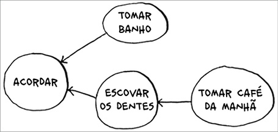
pesquisa("voce")
❶ Esse vetor é a forma pela qual você mantém o registro das pessoas que já foram veri cadas.
❷ Veri ca essa pessoa somente se ela já não tiver sido veri cada.
❸ Marca essa pessoa como veri cada.
Tente executar este código e experimente modi car a função pessoa_e_vendedor para algo com uma nalidade melhor e então veja se ela representa o que você esperava.
Tempo de execução
Se você procurar um vendedor de mangas em toda a sua rede, cada aresta (lembre-se de que aresta é a seta ou a conexão entre uma pessoa e outra) será analisada. Portanto o tempo de execução é, no mínimo, O(número de arestas).
Além disso, também será mantida uma lista com as pessoas já veri cadas.
Adicionar uma pessoa à lista leva um tempo constante: O(1). Fazer isso para cada pessoa terá tempo de execução O(número de pessoas) no total. Assim, a pesquisa em largura tem tempo de execução O(número de pessoas +
número de arestas), que é frequentemente escrito como O(V+A) (V para número de vértices, A para número de arestas).
EXERCÍCIOS
Este é um pequeno grafo da minha rotina matinal.
Ele mostra que não posso tomar café da manhã antes de escovar meus dentes. Então “tomar café da manhã” depende de “escovar os dentes”.
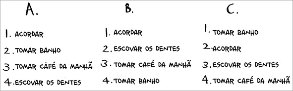
Por outro lado, tomar banho não depende de escovar os dentes, pois posso tomar banho antes de escovar os dentes. A partir desse grafo você pode fazer uma lista relacionando a ordem das atividades da minha rotina matinal.
1. Acordar.
2. Tomar banho.
3. Escovar os dentes.
4. Tomar café da manhã.
Note que “tomar banho” pode ser movido, logo essa lista também é válida: 1. Acordar.
2. Escovar os dentes.
3. Tomar banho.
4. Tomar café da manhã.
6.3 Quanto a estas três listas, marque se elas são válidas ou inválidas.
6.4 Aqui temos um grafo maior. Faça uma lista válida para ele.
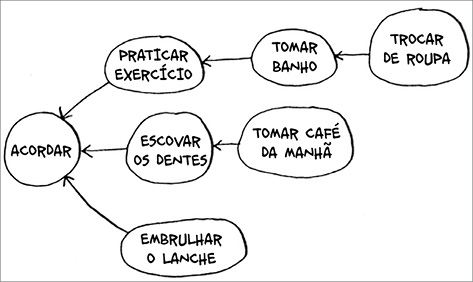
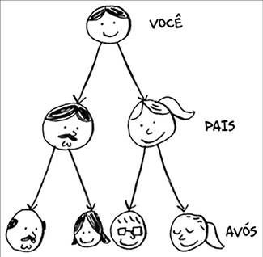
Você poderia dizer que essa lista é, de certa forma, ordenada. Se a tarefa A depende da tarefa B, a tarefa A aparece depois na lista. Isso é chamado de ordenação topológica, e é uma maneira de criar uma lista ordenada a partir de um grafo. Imagine que você esteja planejando um casamento e tenha um grafo enorme de tarefas a serem realizadas. Porém você não sabe nem por onde começar. Assim, uma ordenação topológica do grafo poderia ser feita e, dessa forma, uma lista de tarefas já em ordem seria elaborada.
Suponha que você tenha uma árvore genealógica.
Esta árvore é um grafo, pois existem vértices (as pessoas) e arestas, e as arestas apontam para os pais dos vértices. Porém todas as arestas apontam para baixo, pois não faria sentido uma árvore genealógica ter arestas
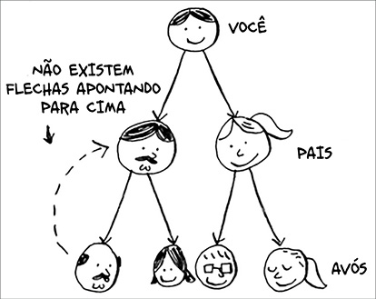
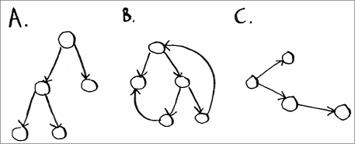
apontando para cima! Seu pai não pode ser o pai do seu avô!
Isso é chamado de árvore. Uma árvore é um tipo especial de grafo em que nenhuma aresta jamais aponta de volta.
6.5 Quais desses grafos também são árvores?
Recapitulando
• A pesquisa em largura lhe diz se há um caminho de A para B.
• Se esse caminho existir, a pesquisa em largura lhe dará o caminho mínimo.
• Se você tem um problema do tipo “encontre o menor X”, tente modelar o seu problema utilizado grafos e use a pesquisa em largura para resolvê-lo.
• Um dígrafo contém setas e as relações seguem a direção das setas (Rama -
> Adit signi ca “Rama deve dinheiro a Adit”).
• Grafos não direcionados não contêm setas, e a relação acontece nos dois
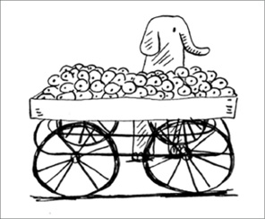
sentidos (Ross – Rachel signi ca “Ross namorou Rachel e Rachel namorou Ross”).
• Filas são FIFO (primeiro a entrar, primeiro a sair).
• Pilhas são LIFO (último a entrar, primeiro a sair).
• Você precisa veri car as pessoas na ordem em que elas foram adicionadas à lista de pesquisa. Portanto a lista de pesquisa deve ser uma la; caso contrário, você não obterá o caminho mínimo.
• Cada vez que você precisar veri car alguém, procure não veri cá-lo novamente. Caso contrário, poderá acabar em um loop in nito.
7
Algoritmo de Dijkstra
Neste capítulo
• Nós continuaremos a discutir sobre grafos e você conhecerá grafos ponderados, que é uma maneira de atribuir pesos em algumas arestas.
• Você aprenderá o algoritmo de Dijkstra, que determina caminho mínimo até X para grafos ponderados.
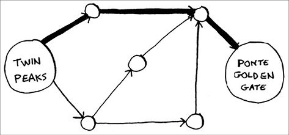
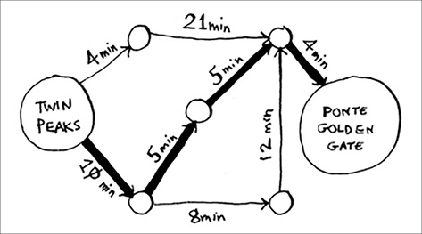
• Você aprenderá ciclos em grafos, que são situações nas quais o algoritmo de Dijkstra não funciona.
No capítulo anterior você aprendeu como chegar do ponto A ao ponto B.
Não é necessariamente o caminho mais rápido, mas é o caminho mais curto porque tem o menor número de segmentos (três segmentos). No entanto suponha que você adicione um tempo de deslocamento aos segmentos.
Agora é possível perceber que há um caminho mais rápido.
Você usou a pesquisa em largura no capítulo anterior, então sabe que ela retornará o caminho com o menor número de segmentos (o primeiro grafo mostrado aqui). E se, em vez disso, quiser fazer o caminho mais rápido (o segundo grafo)? O caminho mais rápido pode ser encontrado com um algoritmo diferente, chamado algoritmo de Dijkstra.
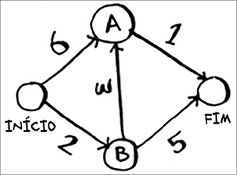
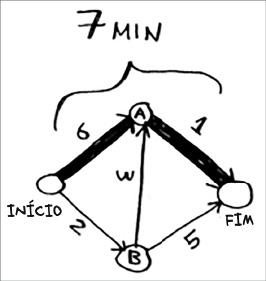
Trabalhando com o algoritmo de Dijkstra
Vamos ver como ele funciona com esse grafo.
Cada segmento tem um tempo de deslocamento em minutos. Você usará o algoritmo de Dijkstra para ir do início ao m no menor tempo possível.
Caso a pesquisa em largura seja executada neste grafo, o algoritmo retornará o caminho mais curto.
Porém este caminho tem duração de sete minutos. Vamos ver se é possível encontrar um caminho que leve menos tempo! O algoritmo de Dijkstra tem quatro etapas:
1. Encontre o vértice mais “barato”. Este é o vértice em que você consegue chegar no menor tempo possível.
2. Atualize o custo dos vizinhos desse vértice. Explicarei o que quero dizer com isso em breve.
3. Repita até que você tenha feito isso para cada vértice do grafo.
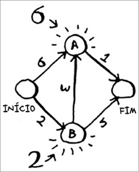
4. Calcule o caminho nal.
Passo 1: Encontre o vértice mais barato. Você está parado no ponto inicial, pensando se deve ir ao vértice A ou ao vértice B. Quanto tempo leva para alcançar cada um?
Você leva seis minutos para chegar ao vértice A e dois minutos para chegar ao vértice B. O tempo para chegar aos outros vértices você ainda desconhece.
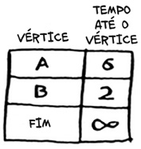
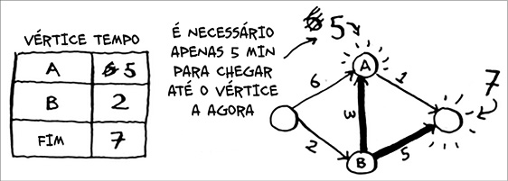
Como você ainda não sabe quanto tempo demora para chegar até o nal, considere-o in nito (você verá o porquê disso logo). O vértice B é o mais próximo, pois está a dois minutos de distância.
Passo 2: Calcule quanto tempo leva para chegar até todos os vértices vizinhos de B, seguindo as arestas de B.
Ei, você acabou de encontrar um caminho mais curto para o vértice A!
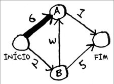
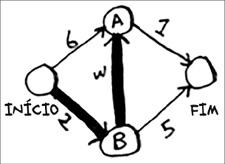
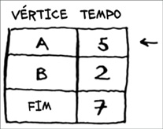
Antes, você levava seis minutos para chegar até ele.
Porém, caso você vá pelo vértice B, existe um caminho que demora apenas cinco minutos!
Quando encontrar um caminho mais curto para um vizinho de B, atualize seu custo. Neste caso você encontrou
• Um caminho mais curto até A (diminuiu de seis minutos para cinco minutos)
• Um caminho mais curto até o nal (diminuiu de in nito para sete minutos)
Passo 3: Repita!
Passo 1 novamente: Encontre o vértice ao qual você consegue chegar em menos tempo. Você já fez isso para o vértice B, então o vértice A tem, agora, menor estimativa de tempo.
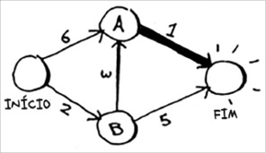
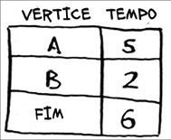
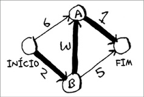
Passo 2 novamente: Atualize os custos para os vizinhos do vértice A.
Uau, agora leva apenas seis minutos para chegar até o nal!
Você executou o algoritmo de Dijkstra para cada vértice (não é necessário rodar para o vértice nal). Até esse ponto, você já sabe que:
• demora dois minutos para chegar ao vértice B.
• demora cinco minutos para chegar ao vértice A.
• demora seis minutos para chegar ao nal.
Guardarei a última etapa, que é o cálculo do caminho nal, para a próxima seção. Por enquanto, vou apenas mostrar como é o caminho nal.
A pesquisa em largura não teria encontrado esse caminho como o caminho mais curto porque ele contém três segmentos, e há uma maneira de chegar do início ao m em dois segmentos.
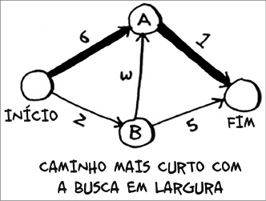
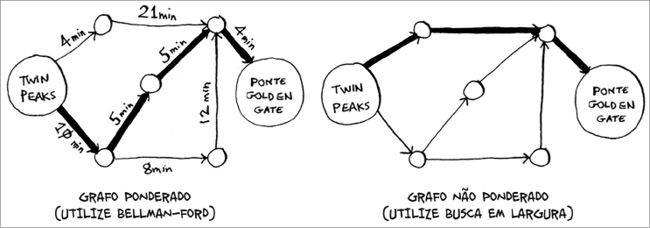
No capítulo anterior você usou a pesquisa em largura para achar o caminho mínimo entre dois pontos. Lá, “caminho mínimo” signi cava o caminho com menor número de segmentos. Porém no algoritmo de Dijkstra você atribui um peso a cada segmento. Logo, o algoritmo encontra o caminho com o menor peso total.
Para relembrar, o algoritmo de Dijkstra tem quatro passos: 1. Encontre o vértice mais “barato”. Esse é o vértice em que você consegue chegar no menor tempo possível.
2. Veri que se há um caminho mais barato para os vizinhos desse vértice.
Caso exista, atualize os custos deles.
3. Repita até que você tenha feito isso para cada vértice do grafo.
4. Calcule o caminho nal (abordado na próxima seção!).
Terminologia
Quero mostrar mais alguns exemplos do algoritmo de Dijkstra em ação, mas, primeiro, deixe-me esclarecer algumas terminologias.
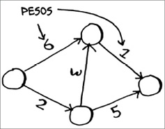
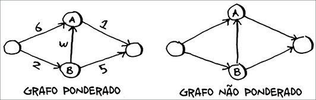
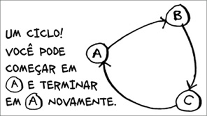
Quando você trabalha com o algoritmo de Dijkstra, cada aresta do grafo tem um número associado a ela. Eles são chamados de pesos.
Um grafo com pesos é chamado de grafo ponderado (também chamado de grafo valorado). Um grafo sem pesos é chamado de grafo não ponderado (também chamado de grafo não valorado).
Para calcular o caminho mínimo em um grafo não ponderado, utilize a pesquisa em largura. Já para calcular o caminho mínimo em um grafo ponderado utilize o algoritmo de Dijkstra. Além disso, grafos também podem conter ciclos que se parecem com isso.
Ciclos indicam que é possível começar em um vértice, viajar ao redor dele e terminar no mesmo vértice. Por exemplo, suponha que esteja tentando achar o caminho mínimo deste grafo, o qual contém um ciclo.
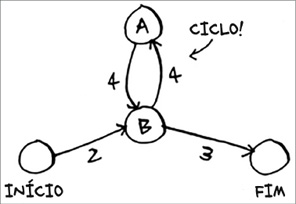
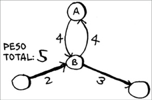
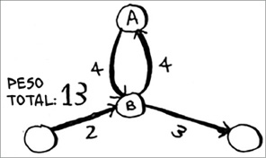
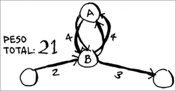
Faria sentido seguir o ciclo? Bem, é possível usar o caminho que o evita.
Ou podemos seguir o ciclo.
Você acabará no vértice A de qualquer forma, mas o ciclo terá mais peso.
Podemos até mesmo seguir o ciclo duas vezes.
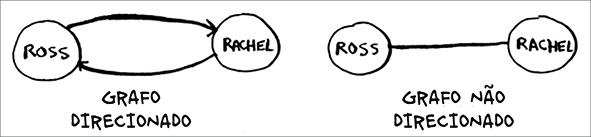
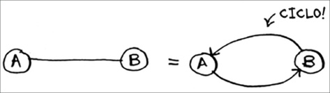
Porém, cada vez que você o seguir, estará apenas adicionando 8 no peso total. Logo, seguir o ciclo jamais fornecerá o caminho mínimo.
Você se lembra da nossa conversa sobre grafos direcionados e grafos não direcionados do Capítulo 6?
Um grafo não direcionado indica que dois vértices podem apontar um para o outro. Ou seja, um grafo não direcionado é um ciclo!
Com um grafo não direcionado, cada vértice adiciona um novo ciclo. O
algoritmo de Dijkstra só funciona com grafos acíclicos dirigidos (em inglês Directed Acyclic Graph, DAG).
Adquirindo um piano
Chega de terminologia, vamos analisar outro exemplo! Este é o Rama.
Rama está tentando trocar um livro de música por um piano.
“Eu troco este pôster pelo seu livro”, diz Alex. “É um pôster da minha banda favorita, Destroyer. Ou então darei este LP raro do Rick Astley pelo seu livro e mais 5 reais.” “Ooh, ouvi dizer que esse LP tem músicas muito boas”, diz Amy. “Trocarei com você meu baixo ou minha bateria pelo pôster ou pelo LP.”
“Eu estava com vontade de aprender baixo!”, exclamou Beethoven. “Ei, troco meu piano por qualquer uma das coisas da Amy.”
Perfeito! Com um pouco de dinheiro, Rama consegue trocar seu livro de piano por um piano de verdade. Agora ele só precisa descobrir como gastar a menor quantia ao fazer essas trocas. Vamos fazer um grafo do que foi oferecido.
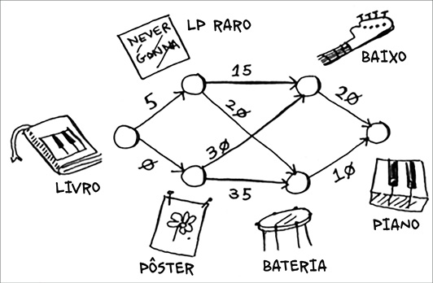
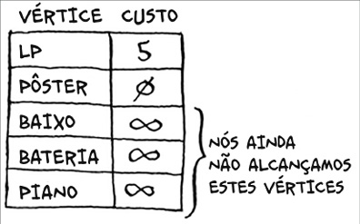
Neste grafo, os vértices são todos os itens que Rama pode trocar. Analisando a imagem, é possível observar que ele pode trocar o pôster pelo baixo por R$
30, ou trocar o LP pelo baixo por R$ 15. Como Rama descobrirá o caminho do livro até o piano por meio do qual ele gasta a menor quantia? Este é o papel do algoritmo de Dijkstra! Lembre-se de que o algoritmo de Dijkstra é separado em quatro passos. Assim, neste exemplo, você executará estes quatro passos e, ao m, conseguirá calcular o caminho nal.
Antes de começar, você precisa de algumas coisas. Primeiro, faça uma tabela com o custo de cada vértice, registrando o quanto você gasta para chegar até cada um dos vértices.
Você continuará atualizando esta tabela conforme o algoritmo for
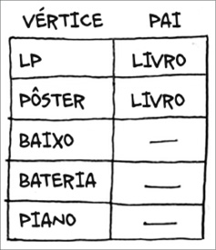
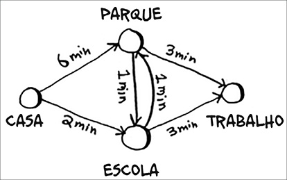
executado. Para calcular o caminho nal, também será necessária uma coluna pai na tabela.
Mostrarei como essa coluna funciona em breve. Agora vamos iniciar o algoritmo.
Passo 1: Encontre o vértice mais barato. Neste caso, o pôster é a troca mais barata, pois tem custo de R$ 0. Existe alguma troca em que Rama possa car com o pôster por menos de R$ 0? Leia adiante quando souber a resposta.
Resposta: Não. Porque o pôster é o vértice mais barato para o qual Rama consegue ir. Logo, não há outra maneira de torná-lo mais barato. Vamos analisar o problema de forma diferente agora. Para isso, suponha que você esteja indo de casa para o trabalho.
Se pegar o caminho em direção à escola, você vai demorar dois minutos para chegar. Já o caminho em direção ao parque demora seis minutos. Existe
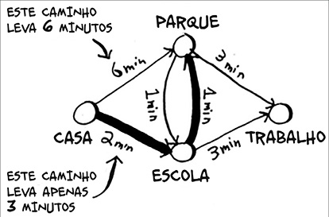
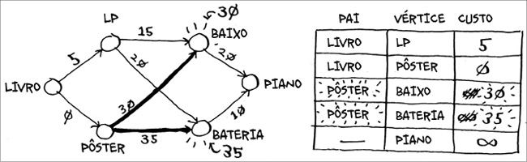
alguma maneira de ir ao parque e acabar na escola em menos de dois minutos? Não, isto é impossível, pois demora mais de dois minutos apenas para chegar até o parque. Por outro lado, você consegue achar um caminho mais rápido até o parque? Sim.
Esta é a ideia-chave por trás do algoritmo de Dijkstra: Olhe para o vértice mais barato do seu grá co: não há uma maneira mais barata de chegar até ele!
De volta ao exemplo do piano. O pôster é a troca mais barata.
Passo 2: Descubra o custo para chegar aos vizinhos do pôster.
Você tem preços para o baixo e para a bateria na tabela. Os valores deles foram registrados quando você passou pelo pôster. Logo, o pôster é de nido como o pai desses itens, o que signi ca que para chegar ao baixo você segue a aresta do pôster, e o mesmo acontece com a bateria.
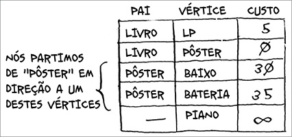
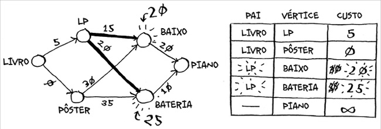
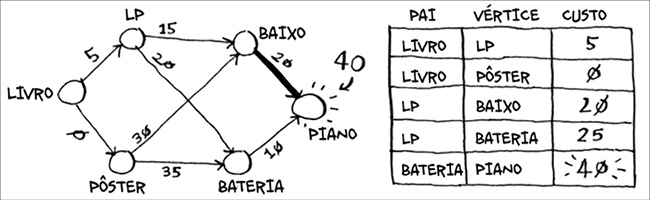
Passo 1 novamente: O LP é o próximo vértice mais barato, pois custa R$ 5.
Passo 2 novamente: Atualize todos os valores dos vizinhos.
Ei, você atualizou o preço tanto da bateria quanto do baixo! Isso signi ca que é mais barato chegar até a bateria e até o baixo seguindo a aresta do LP.
Então, coloque o LP como o pai para ambos os instrumentos.
O baixo é o próximo item mais barato, então você atualiza os seus vizinhos.
Ok, você nalmente tem um preço para o piano, caso o troque pelo baixo.
Portanto, determine o baixo como pai. Por m, o último vértice será a bateria.
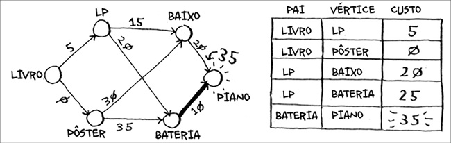
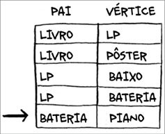
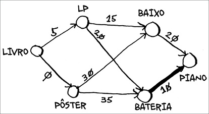
Rama pode conseguir o piano com um custo ainda menor caso troque-o pela bateria. Assim, a série de trocas mais barata custará R$ 35.
Agora, você deve descobrir o caminho. Até o momento você já sabe quanto o caminho mínimo custa (R$ 35), mas como você descobrirá o caminho?
Primeiro, olhe para o pai do piano.
O pai do piano é a bateria. Isso nos diz que Rama trocou a bateria pelo piano e, por isso, deve seguir esta aresta.
Vamos analisar como devemos seguir esta aresta. Sabemos que piano tem bateria como seu pai.
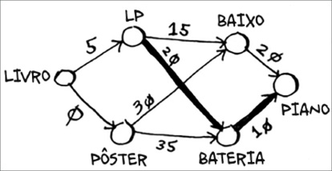
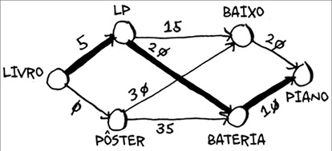
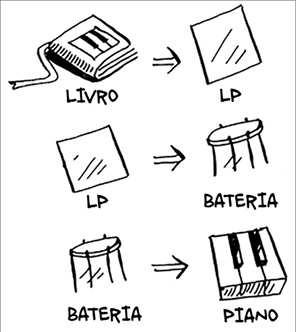
E bateria tem o LP como pai.
Então Rama trocará o LP pela bateria e obviamente trocará o livro pelo LP.
Seguindo os pais, do nal para o início, você terá o caminho completo.
Aqui temos a série de trocas que Rama precisa fazer.
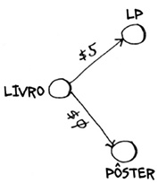
Até este ponto, tenho usado o termo caminho mínimo ou caminho mais curto de forma literal: calculando a distância entre duas localizações ou duas pessoas. Este exemplo tem por objetivo mostrar que o caminho mínimo não precisa ser somente uma distância física, mas que ele também envolve como reduzir algo, que nesse caso consistia em reduzir a quantidade de dinheiro que Rama gastaria. Obrigado, Dijkstra!
Arestas com pesos negativos
Nesse exemplo de troca, Alex ofereceu trocar o livro por dois itens.
Suponha que Sarah ofereça uma troca entre o LP e o pôster, sendo que ela dará a Rama R$ 7 adicionais. Não há nenhum custo para Rama realizar a troca, pelo contrário, ele ainda receberá R$ 7 de volta. Como você mostraria isso no grafo?
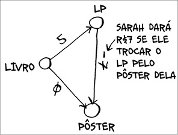
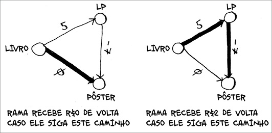
A aresta do LP ao pôster tem um peso negativo! Rama receberá R$ 7 de volta se ele zer essa troca, o que faz com que ele tenha duas maneiras de conseguir o pôster.
Então faz sentido realizar a segunda troca, pois Rama receberá R$ 2 de volta dessa maneira! Agora, se você se lembra, Rama pode trocar o pôster pela bateria. Logo, há dois caminhos que ele pode escolher.
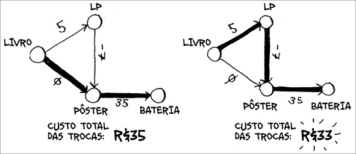
O segundo caminho custa R$ 2 a menos, portanto ele poderá escolher esse caminho, certo? Bem, adivinhe só, se você executar o algoritmo de Dijkstra nesse grafo, Rama escolherá o caminho errado, pois ele pegará o caminho mais longo. Você não pode usar o algoritmo de Dijkstra se você tiver arestas com pesos negativos. Ou seja, os números negativos estragam o algoritmo; para provar isso, vamos ver o que acontece quando executamos o algoritmo de Dijkstra nesta situação. Primeiro, crie a tabela de preços.
Em seguida, encontre o vértice com o menor preço e atualize o preço dos seus vizinhos. Nesse caso o pôster é o vértice com o menor preço. Então, de acordo com o algoritmo de Dijkstra, não há uma maneira mais barata de conseguir o pôster do que pagando R$ 0 (mas você sabe que isso está errado).
De qualquer forma, vamos atualizar o preço dos vizinhos.
A bateria custa R$ 35 agora.
Vamos pegar o próximo vértice mais barato que ainda não foi processado.
Atualize os preços para os seus vizinhos.
Você já processou o vértice do pôster, mas ainda não atualizou o preço dele.
Isso é um grande sinal de alerta, pois, uma vez que um vértice é processado, isso signi ca que não há uma maneira mais barata de chegar até ele. Porém você acabou de achar um caminho mais barato para o pôster! A bateria não tem nenhum vizinho, então esse é o nal do algoritmo. Aqui estão os custos nais.
Assim, o custo para conseguir a bateria é de R$ 35. Porém você sabe que existe um caminho que custa apenas R$ 33, mas o algoritmo de Dijkstra não o encontrou. O algoritmo supôs que, por você estar processando o vértice do pôster, não havia um caminho mais rápido para chegar até esse vértice.
Essa suposição só funciona caso não haja arestas com pesos negativos.
Portanto você não pode usar arestas com pesos negativos com o algoritmo de Dijkstra. Se quiser encontrar o caminho mínimo em um grafo contendo arestas com pesos negativos, existe um algoritmo especí co para isso! Ele é chamado de algoritmo de Bel man-Ford. Este algoritmo está fora do âmbito desse livro, mas você pode encontrar ótimas explicações sobre ele na internet.
Implementação
Vamos aprender como implementar o algoritmo de Dijkstra em forma de código. Aqui temos o grafo que utilizarei neste exemplo.
Para programar esse exemplo você precisará de três tabelas hash.
As tabelas hash relativas ao custo e aos pais serão atualizadas conforme o algoritmo for executado. Porém, antes disso, é necessário implementar o grafo, e para isso será criada uma tabela hash da forma como vimos no Capítulo 6:
grafo = {}
No capítulo anterior, você armazenou todos os vizinhos do vértice em uma tabela de dispersão desta forma:
grafo["voce"] = ["alice", "bob", "claire"]
Porém agora é necessário armazenar os vizinhos e o custo para chegar até aquele vizinho. Por exemplo, Início tem dois vizinhos: A e B.
Como representar os pesos dessas arestas? Por que não utilizar apenas outra tabela hash?
grafo["inicio"] = {}
grafo["inicio"]["a"] = 6
grafo["inicio"]["b"] = 2
Portanto, grafo["inicio"] é uma tabela hash. Você conseguirá todos os vizinhos do Início da seguinte forma:
>>> print grafo["inicio"].keys()
["a", "b"]
Há uma aresta do Início para A e uma aresta do Início para B. E como você encontra o peso dessas arestas?
>>> print grafo["inicio"]["a"]
6
>>> print grafo["inicio"]["b"]
2
Vamos adicionar o restante dos vértices e seus vizinhos ao grafo: grafo["a"] = {}
grafo["a"]["fim"] = 1
grafo["b"] = {}
grafo["b"]["a"] = 3
grafo["b"]["fim"] = 5
grafo["fim"] = {} ❶
❶ O vértice nal não tem vizinhos.
O grafo constituído pela tabela hash é algo assim:
Em seguida você precisa de uma tabela hash para armazenar os custos de cada vértice.
O custo de um vértice é a quantia necessária para chegar, a partir do Início, no vértice em questão. Você sabe que são necessários dois minutos para partir do Início e chegar ao vértice B. Além disso, sabe também que são necessários seis minutos para chegar ao vértice A (embora possa existir um caminho que leve menos tempo). Entretanto você não sabe o tempo necessário para chegar até o nal. Sendo assim, este tempo é considerado in nito. Mas será que é possível representar in nito em Python? Sim, é possível:
infinito = float("inf")
Aqui está o código para criar a tabela de custos:
infinito = float("inf")
custos = {}
custos["a"] = 6
custos["b"] = 2
custos["fim"] = infinito
Você também precisará de outra tabela hash para os pais: Este é o código para criação da tabela hash para os pais: pais = {}
pais["a"] = "inicio"
pais["b"] = "inicio"
pais["fim"] = None
Por m é necessário um array para manter registro de todos os vértices processados, pois eles não precisam ser processados mais de uma vez: processados = []
Esta é toda a con guração necessária. Agora vamos olhar o algoritmo.
Primeiro, mostrarei o código e, depois, o comentarei. Você pode conferir o código abaixo:
nodo = ache_no_custo_mais_baixo(custos) ❶
while nodo is not None: ❷
custo = custos[nodo]
vizinhos = grafo[nodo]
for n in vizinhos.keys(): ❸
novo_custo = custo + vizinhos[n]
if custos[n] > novo_custo: ❹
custos[n] = novo_custo ❺
pais[n] = nodo ❻
processados.append(nodo) ❼
nodo = ache_no_custo_mais_baixo(custos) ❽
❶ Encontra o custo mais baixo que ainda não foi processado.
❷ Caso todos os vértices tenham sido processados, esse laço while será nalizado.
❸ Percorre todos os vizinhos desse vértice.
❹ Caso seja mais barato chegar a um vizinho a partir desse vértice. .
❺ … atualiza o custo dele.
❻ Esse vértice se torna o novo pai para o vizinho.
❼ Marca o vértice como processado.
❽ Encontra o próximo vértice a ser processado e o algoritmo é repetido.
Esse é o algoritmo de Dijkstra em Python! Mostrarei o código para a função posteriormente. Agora, vamos ver o código do algoritmo ache_no_custo_mais_baixo em ação.
Encontre o vértice com o menor custo.
Pegue o custo e os vizinhos desse vértice.
Percorra todos os vizinhos.
Cada vértice tem um custo, sendo o custo o tempo necessário para chegar até esse vértice partindo do início. Aqui, você está calculando o tempo necessário para chegar até o ponto A se você partir do Início e seguir o caminho Início > vértice B > vértice A, em vez de Início > vértice A.
Comparando os custos.
Você achou um caminho menor para o vértice A! Agora, atualize o custo.
O caminho novo vai pelo vértice B, então considere B como o novo pai.
Você está de volta ao topo do loop. O próximo vizinho do for é o vértice nal.
Qual o tempo necessário para chegar ao nal, caso você vá pelo vértice B?
O tempo necessário é sete minutos, sendo que o custo anterior era de in nitos minutos e sete minutos é menor do que in nito.
Agora, considere o novo custo e o novo pai para o vértice nal.
Você atualizou todos os custos para todos os vizinhos do vértice B; marque-o como processado e continue.
Encontre o próximo vértice a ser processado.
Pegue os custos e os vizinhos do vértice A.
O vértice A só tem um vizinho: o vértice nal.
Atualmente o menor tempo necessário para alcançar o vértice nal é sete minutos. Quanto tempo levaria para chegar lá se você fosse pelo vértice A?
É mais rápido chegar ao vértice nal pelo vértice A! Vamos atualizar o custo e o pai.
Uma vez que você processou todos os vértices, o algoritmo é nalizado.
Espero que o passo a passo tenha lhe ajudado a entender o algoritmo um pouco melhor. Encontrar o vértice de custo mínimo é uma tarefa simples utilizando a função ache_no_custo_mais_baixo. O código desta função
def ache_no_custo_mais_baixo(custos):
custo_mais_baixo = float("inf")
nodo_custo_mais_baixo = None
for nodo in custos: ❶
custo = custos[nodo]
if custo<custo_mais_baixo and nodo not in processados: ❷
custo_mais_baixo = custo ❸
nodo_custo_mais_baixo = nodo
return nodo_custo_mais_baixo
❶ Vá por cada vértice.
❷ Se for o vértice de menor custo até o momento e ainda não tiver sido processado
. .
❸ … atribua como o novo vértice de menor custo.
EXERCÍCIO
7.1 Em cada um desses grafos, qual o peso do caminho mínimo do início ao m?
Recapitulando
• A pesquisa em largura é usada para calcular o caminho mínimo para um grafo não ponderado.
• O algoritmo de Dijkstra é usado para calcular o caminho mínimo para um grafo ponderado.
• O algoritmo de Dijkstra funciona quando todos os pesos são positivos.
• Se o seu grafo tiver pesos negativos, use o algoritmo de Bel man-Ford.
8
Algoritmos gulosos
Neste capítulo
• Você aprenderá como lidar com o impossível: problemas que não têm um algoritmo de solução rápida (problemas NP-completo).
• Você aprenderá como identi car esses problemas ao se deparar com eles, de forma que não perca tempo tentando achar um algoritmo rápido para solucioná-los.
• Você conhecerá os algoritmos de aproximação, que podem ser usados para encontrar, de maneira rápida, uma solução aproximada para um problema NP-completo.
• Você conhecerá a estratégia gulosa, uma estratégia muito simples para resolver problemas.
O problema do cronograma da sala de aula
Suponha que você tenha uma sala de aula e queira reservar o máximo de aulas possível nela. Assim, recebe-se uma lista das aulas.
Você não pode reservar todas essas aulas na sala porque os horários de algumas delas coincidem.
Soa como um problema difícil, não? Na realidade, o algoritmo é tão simples que pode surpreender. Aqui temos o funcionamento dele: 1. Pegue a aula que termina mais cedo. Esta é a primeira aula que você colocará nessa sala.
2. Agora você precisa pegar uma aula que comece depois da primeira aula.
De novo, pegue a aula que termine mais cedo. Esta é a segunda aula que você colocará
Continue fazendo isso e no nal você terá a sua resposta! Vamos testar: Artes termina mais cedo, às 10h00, então esta é a aula escolhida.
Agora você precisa da próxima aula, que começa depois das 10h00 e termina mais cedo que as demais.
Inglês não pode ser escolhido porque tem con ito com Artes, mas a aula de Matemática encaixa.
Por m, Ciências da Computação tem con ito com Matemática, mas a aula de Música encaixa.
Então, estas são as três aulas que você colocará nessa sala de aula.
Muitas pessoas me dizem que esse algoritmo parece ser fácil. Mas ele é óbvio demais, logo, deve estar errado. No entanto essa é a beleza dos algoritmos gulosos (também chamados de algoritmos gananciosos): eles são fáceis! Um algoritmo guloso é simples: a cada etapa, deve-se escolher o movimento ideal. Nesse caso, cada vez que você escolhe uma aula, deve escolher a que acaba mais cedo. Em termos técnicos: a cada etapa, escolhe-se a solução ideal, e no m você tem uma solução global ideal. Acredite ou não, esse algoritmo simples acha a solução ideal para esse problema!
Obviamente os algoritmos gulosos nem sempre funcionam, mas eles são tão simples de escrever! Vamos olhar outro exemplo.
O problema da mochila
Suponha que você seja um ladrão ganancioso e esteja em uma loja com sua mochila. Na loja existem diversos itens que você pode roubar. Porém você só pode levar aquilo que caiba na sua mochila, que só suporta 16 quilos.
Você está tentando maximizar o valor dos itens que colocará na sua mochila. Para isso, que algoritmo você usa?
1. Pegue o item mais caro que caiba na sua mochila.
2. Pegue o próximo item mais caro que caiba na sua mochila, e assim por diante.
Dessa vez, o algoritmo não funciona! Por exemplo, suponha que existam três itens que você possa roubar.
Sua mochila suporta 16 quilos. O aparelho de som é o item mais caro, então você pode roubá-lo. Mas agora não há espaço para mais nada.
Você roubou R$ 3.000 em bens, mas espere um pouco! Caso tivesse pegado o notebook e o violão, você poderia ter R$ 3.500!
Claramente, a estratégia gulosa não oferece a melhor solução aqui, mas fornece um valor bem próximo. No próximo capítulo explicarei como
calcular a solução correta, mas se você é um ladrão em um shopping, não se importa com a melhor solução. “Muito bom” é bom o su ciente.
Moral da história para este exemplo: às vezes, o melhor é inimigo do bom.
Em alguns casos, tudo o que você precisa é de um algoritmo que resolva o problema de uma maneira muito boa. E é aí que os algoritmos gulosos entram, pois eles são simples de escrever e normalmente chegam bem perto da solução perfeita.
EXERCÍCIOS
8.1 Você trabalha para uma empresa de mobílias e tem de enviar os móveis para todo o país. É necessário encher seu caminhão com caixas, e todas as caixas são de tamanhos diferentes. Você está tentando maximizar o espaço que consegue usar em cada caminhão. Como escolheria as caixas para maximizar o espaço? Proponha uma solução gulosa. Ela lhe dará a solução ideal?
8.2 Você está viajando para a Europa e tem sete dias para visitar o maior número de lugares. Para cada lugar você atribui um valor (o quanto deseja ver) e estima quanto tempo demora. Como maximizar o total de pontos (passar por todos os lugares que realmente quer ver) durante sua estadia? Proponha uma solução gulosa. Ela lhe dará a solução ideal?
Vamos analisar um último exemplo. Este é um exemplo em que algoritmos gulosos são absolutamente necessários.
O problema da cobertura de conjuntos
Suponha que você esteja começando um programa de rádio e queira atingir ouvintes em todos os cinquenta estados americanos. É necessário decidir em quais estações transmitir para atingir todos os ouvintes. Porém transmitir em diferentes estações tem um custo, e você está tentando minimizar o número de estações nas quais você transmite para minimizar o custo. Temos uma lista de estações.
Cada estação abrange uma região e existe uma sobreposição.
Como descobrir o menor conjunto de estações nas quais você pode transmitir e abranger os cinquenta estados? Soa fácil, não? Acontece que é extremamente difícil. Aqui está uma solução:
1. Liste cada subconjunto possível de estações. Isso é chamado de conjunto de partes (também conhecido como conjunto de potência). Neste caso, existem 2^ n possíveis conjuntos.
2. Entre eles, escolha o conjunto com o menor número de estações que abranja todos os cinquenta estados.
O problema neste caso é que o tempo para calcular cada possível subconjunto de estações é muito longo, uma vez que o tempo de execução é O(2^ n), pois existem 2^ n subconjuntos. Seria possível calcular se você tivesse um grupo pequeno de cinco a dez estações, mas, como em todos os exemplos aqui, pense o que aconteceria se você tivesse muitos itens. O
tempo com um maior número de estações será longo demais. Para exempli car, suponha que você consiga calcular dez subconjuntos por segundo.
Não existe um algoritmo que resolva isso rápido o su ciente! O que você pode fazer?
Algoritmos de aproximação
Algoritmos gulosos ao resgate! Aqui temos um algoritmo guloso que chega bem perto da solução:
1. Pegue a estação que abranja o maior número de estados que ainda não foram cobertos. Tudo bem se a estação abranger alguns estados que já
2. Repita isso até que todos os estados tenham sido cobertos.
Isto se chama algoritmo de aproximação. Quando é necessário muito tempo para calcular a solução exata, um algoritmo de aproximação é uma boa ideia e funciona. Os algoritmos de aproximação são avaliados
• por sua rapidez;
• pela capacidade de chegar à solução ideal.
Os algoritmos gulosos são uma boa escolha porque eles são de fácil compreensão e sua simplicidade também indica que geralmente eles são de rápida execução. Nesse caso, o algoritmo guloso tem tempo de execução O( n^2), em que n é o número de estações de rádio.
Vamos ver como é esse problema em código.
Código para o exemplo
Para esse exemplo, usarei um subconjunto de estados e estações para simpli car.
Primeiro, faça uma lista dos estados que deseja abranger: estados_abranger = set(["mt", "wa", "or", "id", "nv", "ut","ca",
"az"]) ❶
❶ Você passa um array como entrada e ele é convertido em um conjunto.
Usei um conjunto para isso, pois um conjunto é como uma lista, com exceção do fato de que cada item só pode aparecer uma vez. Conjuntos não podem ter elementos duplicados. Por exemplo, suponha que você tivesse esta lista:
>>> arr = [1, 2, 2, 3, 3, 3]
E a tivesse convertido para um conjunto:
>>> set(arr)
set([1, 2, 3])
Os números 1, 2 e 3 aparecerão apenas uma vez no conjunto.
Você também precisa da lista de estações que podem ser escolhidas.
Eescolhi usar uma tabela hash para isso:
estacoes = {}
estacoes["kum"] = set(["id", "nv", "ut"]) estacoes["kdois"] = set(["wa", "id", "mt"]) estacoes["ktres"] = set(["or", "nv", "ca"]) estacoes["kquatro"] = set(["nv", "ut"]) estacoes["kcinco"] = set(["ca", "az"]) Em português, vamos chamar essas estações de kum, kdois, ktres, e assim por diante.
As chaves são os nomes das estações, e os valores são os estados que elas abrangem. Então, neste exemplo, a estação kum abrange Idaho (id), Nevada (nv) e Utah (ut). Todos os valores também são conjuntos, pois fazer com que tudo seja um conjunto tornará sua vida mais fácil, como verá em breve.
Finalmente, você precisa de algo para armazenar o conjunto nal de estações. Para isso você usará:
estacoes_final = set()
Calculando a resposta
Agora, você deve calcular as estações que utilizará. Dê uma olhada na imagem a seguir e veja se consegue prever qual estação deve ser utilizada.
Pode existir mais de uma opção correta, sendo que você deve observar cada estação e escolher uma que cubra o maior número de estados não cobertos.
Chamarei isso de melhor_estacao:
melhor_estacao = None
estados_cobertos = set()
for estacao, estados_por_estacao in estacoes.items(): estados_cobertos é um conjunto de todos os estados que essa estação abrange que ainda não foram cobertos. O loop for lhe permite percorrer todas as estações para ver qual é a melhor estação. Vamos olhar o conteúdo do loop for:
cobertos = estados_abranger & estados_por_estacao ❶
if len(cobertos) > len(estados_cobertos): melhor_estacao = estacao
estados_cobertos = cobertos
❶ Nova sintaxe! Isso é chamado de intersecção.
Tem uma linha engraçada aqui:
cobertos = estados_abranger & estados_por_estacao O que está acontecendo?
Conjuntos
Suponha que você tenha um conjunto de frutas e também tenha um conjunto de vegetais.
Quando você tem dois conjuntos, é possível fazer algumas coisas legais com eles.
Vou exempli car algumas coisas que você pode fazer com conjuntos.
• Uma união signi ca “combine os dois conjuntos”.
• Uma intersecção signi ca “encontre os itens que aparecem nos dois conjuntos” (nesse caso, apenas o tomate).
• Uma diferença signi ca “subtraia os itens de um conjunto dos itens do outro conjunto”.
Por exemplo:
>>> frutas = set(["abacate", "tomate", "banana"])
>>> vegetais = set(["beterraba", "cenoura", "tomate"])
>>> frutas | vegetais ❶
set(["abacate", "beterraba", "cenoura", "tomate", "banana"])
>>> frutas & vegetais ❷
set(["tomate"])
>>> frutas – vegetais ❸
set(["abacate", "banana"])
>>> vegetais – frutas ❹
❶ Isso é uma união.
❷ Isso é uma intersecção.
❸ Isso é uma diferença.
❹ O que você acha que isso fará?
Relembrando:
• Conjuntos são como listas, exceto pelo fato de não poderem ter elementos repetidos.
• Você pode fazer algumas operações interessantes com conjuntos como união, intersecção e diferença.
De volta ao código
Vamos voltar ao exemplo original.
Isto é uma intersecção:
cobertos = estados_abranger & estados_por_estacao cobertos é um conjunto de estados que eram tanto estados_abranger
quanto estados_por_estacao. Então cobertos é o conjunto de estados não cobertos que essa estação abrange! Em seguida, veri que se essa estação abrange mais estados que a atual melhor_estacao:
if len(cobertos) > len(estados_cobertos): melhor_estacao = estacao
estados_cobertos = cobertos
Caso ela abranja, essa estação é a nova melhor_estacao. Finalmente, depois que o loop for acabar, adicione melhor_estacao à lista nal de estações: estacoes_finais.add(melhor_estacao)
Você também precisará atualizar estados_abranger, pois esta estação abrange alguns estados, e esses estados não mais precisam de estações que os abranjam, ou seja, não são mais necessários para o algoritmo: estados_abranger -= estados_cobertos
Assim, você ca em um loop até que estados_abranger esteja vazio. Aqui está o código completo para o loop:
while estados_abranger:
melhor_estacao = None
estados_cobertos = set()
for estacao, estados in estacoes.items():
cobertos = estados_abranger & estados
if len(cobertos) > len(estados_cobertos): melhor_estacao = estacao
estados_cobertos = cobertos
estados_abranger -= estados_cobertos
estacoes_finais.add(melhor_estacao)
Por m, você pode imprimir estacoes_finais, e deverá ver isto:
>>> print estacoes_finais
set(['ktwo', 'kthree', 'kone', 'kfive'])
É isso que você esperava? Em vez das estações 1, 2, 3 e 5, as estações 2, 3, 4 e 5 poderiam ter sido escolhidas. Agora, vamos comparar o tempo de execução do algoritmo guloso e do algoritmo exato.
EXERCÍCIOS
Para cada um desses algoritmos, diga se ele é um algoritmo guloso ou não.
8.3 Quicksort
8.4 Pesquisa em largura
8.5 Algoritmo de Dijkstra
Problemas NP-completos
Para resolver o problema de cobertura de conjuntos você deve calcular cada conjunto possível.
Talvez isso o tenha feito se lembrar do problema do caixeiro-viajante do Capítulo 1. Neste problema, o caixeiro-viajante tem de visitar cinco cidades diferentes.
Ele está tentando descobrir a rota mais curta que o levará até as cinco cidades. Para encontrar a rota mais curta, primeiro devem-se calcular todas as rotas possíveis.
Quantas rotas devem-se calcular para cinco cidades?
Caixeiro-viajante, passo a passo
Vamos começar do básico. Suponha que você deseja visitar apenas duas cidades. Há duas rotas que você pode escolher.
Mesma rota ou rota diferente?
Você pode pensar que essa deveria ser a mesma rota. Porque, no m das contas, SF > Marin acaba tendo a mesma distância que Marin > SF, certo? Não necessariamente. Algumas cidades (como San Francisco) têm muitas ruas de sentido único, então você não pode voltar por onde veio. Ou seja, pode ser necessário seguir alguns quilômetros na direção errada para pegar o acesso a uma rodovia. Logo, duas rotas não são necessariamente a mesma coisa.
Você deve estar pensando “No problema do caixeiro-viajante, existe uma cidade especí ca de onde devo partir?”. Vamos dizer, por exemplo, que sou o caixeiro-viajante e que vivo em San Francisco e preciso ir para quatro cidades. San Francisco seria minha cidade de partida.
Porém, às vezes, a cidade de partida não está de nida. Suponha que você seja o FedEx (serviço postal americano) tentando entregar um pacote em Bay Area (área da Baía de San Francisco). Esse pacote está vindo de Chicago para uma das cinquenta unidades da FedEx em Bay Area. Logo depois, o pacote será transportado em um caminhão que viajará para diferentes locais fazendo as entregas. Quando vindo de Chicago, para qual unidade em San Francisco o pacote deve ser enviado? Aqui o local de partida é desconhecido. Cabe a você calcular o caminho ideal e o local de partida para o caixeiro-viajante.
O tempo de execução das duas versões é o mesmo, mas o exemplo cará mais fácil se não houver uma cidade de partida, então vou usar esta versão.
Duas cidades = duas rotas possíveis.
Três cidades
Agora suponha que você tenha adicionado mais uma cidade. Quantas rotas existem?
Se você começar em Berkeley, ainda deverá visitar mais duas cidades.
Há um total de seis rotas, duas para cada cidade em que pode começar.
Então três cidades = seis rotas possíveis.
Quatro cidades
Vamos adicionar outra cidade: Fremont. Suponha que você inicie lá.
Há seis rotas possíveis partindo de Fremont, e olhe só! Elas se parecem muito com as seis rotas que você calculou anteriormente, quando tinha apenas três cidades. Com exceção de que agora todas as rotas têm uma cidade adicional: Fremont! Há um padrão aqui, e para visualizá-lo, suponha que existam quatro cidades e que você possa escolher a cidade de partida.
Você escolhe Fremont. Há três cidades sobrando, e se há três cidades, existem seis rotas diferentes para trafegar entre elas. Caso você inicie em Fremont, existem seis rotas possíveis. Também pode-se iniciar em uma das outras cidades.
Quatro cidades de partida possíveis, com seis rotas possíveis para cada cidade de partida = 4 * 6 = 24 rotas possíveis.
Percebe o padrão? Cada vez que uma cidade é adicionada, o número de rotas que devem ser calculadas aumenta.
Quantas rotas possíveis existem para seis cidades? Se você disse 720, está certo. Além disso, existem 5.040 rotas para sete cidades e 40.320 para oito cidades.
Isso é chamado de função fatorial (Você se lembra de ter lido sobre isso no Capítulo 3?). Então 5! = 120. Suponha que você tenha dez cidades. Quantas rotas possíveis existem? 10! = 3.628.800. Devem-se calcular perto de 3
milhões de rotas possíveis para dez cidades. Como você pode notar, o número de rotas possíveis cresce rapidamente! É por isso que é impossível calcular a solução “correta” para o problema do caixeiro-viajante caso o número de cidades seja muito elevado.
Tanto o problema do caixeiro-viajante quanto o problema da cobertura de
conjuntos têm algo em comum: calcula-se cada solução possível e escolhe-se a menor. Esses dois problemas são NP-completos.
Aproximando
Qual é uma aproximação boa para o algoritmo do caixeiro-viajante? Algo simples que encontre um caminho curto. Veja se consegue pensar em uma resposta antes de continuar a leitura.
Como eu faria: aleatoriamente, escolheria uma cidade de partida. Em seguida, toda vez que o caixeiro-viajante tivesse de escolher a próxima cidade, ele escolheria a cidade não visitada mais próxima. Suponha que ele tenha começado em Marin.
Distância total: 71 quilômetros. Talvez não seja o menor caminho, mas, ainda assim, é bem curto.
Uma breve explicação sobre NP-completo: alguns problemas são notoriamente difíceis de resolver. O caixeiro-viajante e o problema de cobertura de conjuntos são dois exemplos. Diversas pessoas duvidam da possibilidade de criar um algoritmo que resolva esses problemas de forma rápida.
Como faço para saber se um problema é NP-completo?
Jonah está escolhendo jogadores para o seu time de futebol americano de mentira. Ele tem uma lista de características as quais gostaria que seu time tivesse: um bom quarterback, um bom running back, jogadores que joguem bem na chuva e que joguem bem sob pressão, entre outras habilidades. Ele tem uma lista de jogadores, e cada jogador preenche algumas dessas habilidades.
Jonah precisa de um time que preencha todas as características desejadas, mas o tamanho do time é limitado. “Espere um segundo”, Jonah pensa. “Este é um problema de cobertura de conjuntos!”
Jonah pode usar o mesmo algoritmo de aproximação para criar seu time: 1. Encontre o jogador que preenche o maior número de habilidades que ainda não foram preenchidas.
2. Repita até que o time tenha preenchido todas as habilidades (ou até que você que sem espaço no time).
Problemas NP-completos aparecem em todo lugar! É sempre bom saber se o problema que você está tentando resolver é NP-completo, pois nesta situação você pode parar de tentar resolvê-lo perfeitamente e, em vez disso, resolvê-lo usando um algoritmo de aproximação. Porém é difícil perceber se o problema em que você está trabalhando é um problema NP-completo, pois normalmente a diferença entre um problema que é fácil de resolver e um NP-completo é muito pequena. Por exemplo, nos capítulos anteriores falei muito sobre caminhos mínimos. Você sabe como calcular o caminho
mínimo para chegar do ponto A ao ponto B.
Entretanto, se quiser encontrar o caminho mínimo que conecta vários pontos, cairá no problema do caixeiro-viajante, que é um problema NP-completo. A resposta simples é: não há uma maneira fácil de dizer se o problema em que você está trabalhando é NP-completo. Aqui temos alguns indicativos:
• Seu algoritmo roda rápido para alguns itens, mas ca muito lento com o aumento de itens.
• “Todas as combinações de X” geralmente signi cam um problema NP-completo.
• Você tem de calcular “cada possível versão” de X porque não pode dividir em subproblemas menores? Talvez seja um problema NP-completo.
• Se o seu problema envolve uma sequência (como uma sequência de cidades, como o problema do caixeiro-viajante) e é difícil de resolver, pode ser um NP-completo.
• Se o seu problema envolve um conjunto (como um conjunto de estações de rádio) e é difícil de resolver, ele pode ser um problema NP-completo.
• Você pode reescrever o seu problema como o problema de cobertura mínima de conjuntos ou o problema do caixeiro-viajante? Então seu problema de nitivamente é NP-completo.
EXERCÍCIOS
8.6 Um carteiro deve entregar correspondências para vinte casas. Ele deve
encontrar a rota mais curta que passe por todas as vinte casas. Esse é um problema NP-completo?
8.7 Encontrar o maior clique1 em um conjunto de pessoas (um clique, para este exemplo, é um conjunto de pessoas em que todos se conhecem). Isso é um problema NP-completo?
8.8 Você está fazendo um mapa dos Estados Unidos e precisa colorir estados adjacentes com cores diferentes. Para isso, deve encontrar o número mínimo de cores para que não existam dois estados adjacentes com a mesma cor. Isso é um problema NP-completo?
Recapitulando
• Algoritmos gulosos otimizam localmente na esperança de acabar em uma otimização global.
• Problemas NP-completo não têm uma solução rápida.
• Se você estiver tentando resolver um problema NP-completo, o melhor a fazer é usar um algoritmo de aproximação.
• Algoritmos gulosos são fáceis de escrever e têm tempo de execução baixo, portanto eles são bons algoritmos de aproximação.
1 N.T.: Na área da matemática da teoria dos grafos, um clique em um grafo não orientado é um subconjunto de seus vértices tais que cada dois vértices do subconjunto são conectados por uma aresta.
9
Programação dinâmica
Neste capítulo
• Você aprenderá programação dinâmica, uma técnica para resolução de problemas complexos que se baseia na divisão de um problema em subproblemas, os quais são resolvidos separadamente.
• Você aprenderá, a partir de exemplos, como criar uma solução em programação dinâmica para resolver um novo problema.
O problema da mochila
Vamos rever o problema da mochila, visto no Capítulo 8. Você é um ladrão com uma mochila que consegue carregar apenas 16 quilos.
Você tem três itens disponíveis para colocar dentro da sua mochila.
Quais itens você deveria roubar para maximizar o valor roubado?
A solução simples
O algoritmo mais simples é o seguinte: você deve testar para todos os conjuntos de itens possíveis e descobrir qual conjunto maximizará o valor roubado.
Isto funciona, mas é uma solução muito lenta, pois para três itens você deverá calcular oito conjuntos possíveis. Para quatro itens, são 16 conjuntos.
Cada item adicionado dobrará o número de cálculos. Este algoritmo tem tempo de execução O(2^ n); é muito, muito lento.
Esta solução não é prática para qualquer número razoável de itens. No Capítulo 8, vimos como calcular uma solução aproximada. Esta solução é próxima o su ciente da solução ideal, mas talvez não seja a própria.
Então, como calcularemos a solução ideal?
Programação dinâmica
Resposta: Usando a programação dinâmica! Vamos observar como o algoritmo da programação dinâmica funciona. Ele começa com a resolução de subproblemas e vai escalando-os até resolver o problema geral.
No problema da mochila, você começaria resolvendo o problema para mochilas menores (ou “submochilas”) e iria escalando estes problemas até resolver o problema original.
A programação dinâmica representa um conceito complexo, então não se preocupe se você não a entender logo de cara, pois vamos analisar diversos exemplos.
Vou começar mostrando o algoritmo na prática. Depois disso, você com certeza terá muitas dúvidas! Darei o meu melhor para tentar respondê-las.
Cada algoritmo de programação dinâmica começa com uma tabela. Aqui está a tabela para o problema da mochila.
As linhas da tabela são os itens e as colunas são as capacidades das mochilas, com valores de 1 quilo, 2 quilos, 3 quilos e 4 quilos. Você precisa destes valores porque eles auxiliarão na resolução dos subproblemas.
A tabela começa vazia, mas você preencherá cada célula dela. Quando a tabela for preenchida, a resposta do problema terá sido encontrada! Por favor, faça a sua própria tabela e me acompanhe.
A linha do violão
Mostrarei a fórmula para calcular esta tabela mais tarde. Primeiro, vamos seguir um passo a passo, começando na primeira linha da tabela.
Esta é a linha do violão, isso indica que você está tentando colocá-lo na sua mochila. Em cada célula, uma decisão simples será tomada: Você roubará ou não o violão? Lembre-se de que você está tentando encontrar o conjunto de itens perfeito para roubar, o qual maximizará o valor do roubo.
A primeira célula indica uma capacidade de peso para mochila igual a 1
quilo. O violão pesa exatamente isso, o que nos con rma que ele cabe na mochila! Assim, o valor desta célula é R$ 1.500 e ela contém um violão.
Vamos começar a preencher a tabela.
Cada célula da tabela conterá uma lista de todos os itens que cabem na mochila.
Vamos para a próxima célula, que tem uma capacidade de 2 quilos. Bom, com certeza o violão cabe!
E fazemos o mesmo para o restante desta linha. Lembre-se: esta é a primeira linha, portanto você tem apenas o violão para escolher, pois estamos considerando os outros itens como indisponíveis para o roubo.
Você provavelmente está confuso em relação ao porquê de utilizarmos mochilas com capacidades de 1 quilo, 2 quilos e assim por diante, quando o problema especi cou que a sua mochila tem capacidade para 16 quilos.
Você se lembra de quando eu disse que a programação dinâmica inicia com problemas menores e os resolve até chegar ao problema geral? Você está resolvendo subproblemas que o ajudarão a resolver o problema especi cado.
Continue lendo com atenção, e as coisas começarão a fazer mais sentido.
Agora, sua tabela deve estar assim:
Lembre-se de que estamos tentando maximizar o valor contido na mochila.
Esta linha representa o melhor palpite atual para este máximo. Assim, agora, de acordo com esta linha, se você tivesse uma mochila com capacidade de 4
quilos, o valor máximo que você poderia roubar seria R$ 1.500.
Você sabe que esta não é a solução nal. Ao adentrarmos no algoritmo, teremos estimativas mais re nadas.
A linha do rádio
Vamos preencher a próxima linha, a qual é relativa ao rádio. Agora que você está na segunda linha, pode roubar tanto o rádio quanto o violão. Em cada linha, será possível roubar o item relativo àquela linha e todos os itens das linhas anteriores. Porém o notebook ainda não é uma possibilidade. Vamos começar com a primeira célula, relativa a uma mochila com capacidade de 1
quilo. O máximo valor atual que você pode roubar com uma mochila de 1
quilo é R$ 1.500.
Você deveria roubar o rádio?
Você tem uma mochila com capacidade de 1 quilo. O rádio pode ser colocado dentro dela? Não, ele é muito pesado! E como você não consegue roubar o rádio, o palpite para maximizar o roubo com uma mochila de 1
quilo continua sendo R$ 1.500.
A mesma situação se repete nas próximas duas células, pois a mochila tem capacidade de 2 quilos e 3 quilos, respectivamente. Ou seja, o valor máximo continua sendo R$ 1.500.
O rádio não pode ser roubado, então o seu palpite continua o mesmo.
E se você tiver uma mochila com capacidade para 4 quilos? Ahá! O rádio nalmente pode ser roubado! O valor máximo antigo era R$ 1.500, mas, com a possibilidade de roubar o rádio, o valor se torna R$ 3.000! Ou seja, vamos roubar o rádio.
Você acabou de atualizar a sua estimativa! Se você tiver uma mochila com capacidade para 4 quilos, conseguirá roubar itens que valem R$ 3.000. É
possível visualizar na tabela que a sua estimativa está sendo incrementada.
A linha do notebook
Vamos fazer o mesmo com o notebook! Ele pesa 3 quilos, portanto não será possível roubá-lo com a mochila de 1 quilo e 2 quilos. Assim, a estimativa
para as primeiras duas células continua sendo R$ 1.500.
Com a mochila de 3 quilos, a estimativa antiga para o valor máximo era de R$ 1.500. Porém você pode escolher roubar o notebook agora, que vale R$
2.000. Logo, o novo máximo estimado é R$ 2.000!
Com a mochila de 4 quilos as coisas cam interessantes. Esta é uma parte importante, pois a estimativa atual é de R$ 3.000. Você pode colocar o notebook na mochila, mas ele vale apenas R$ 2.000.
Humm, isso não é tão bom quanto a outra estimativa. Mas espere aí! O
notebook pesa apenas 3 quilos, o que deixa a mochila com capacidade para mais 1 quilo. Ou seja, você pode colocar mais alguma coisa que pese 1 quilo na mochila.
Qual o valor máximo que você consegue colocar em uma mochila com 1
quilo livre? Bem, você já calculou isso.
De acordo com a última estimativa, é possível colocar um violão em 1 quilo de espaço livre, sabendo que ele vale R$ 1.500. Portanto a comparação real é a seguinte:
Você pode estar se perguntando por que estivemos calculando os valores máximos para mochilas menores. Espero que agora tudo faça sentido!
Quando você tem espaço sobrando, é possível usar as respostas dos subproblemas para descobrir o que colocar no espaço livre. Assim, a melhor opção é levar o notebook + violão, com valor de R$ 3.500.
A tabela nal cará assim:
E ali está a resposta: O valor máximo que caberá na mochila é R$ 3.500, referentes a um violão e um notebook!
Você pode achar que usei uma fórmula diferente para calcular o valor da última célula, mas isso é impressão, pois pulei algumas complexidades desnecessárias enquanto preenchia os valores das células anteriores. Cada célula é calculada com a mesma fórmula, que pode ser vista a seguir: Você pode usar esta fórmula em cada célula da tabela e deverá encontrar uma tabela igual a esta demonstrada aqui. Você se lembra de quando falei sobre resolver subproblemas? Combinamos as soluções de dois subproblemas para resolver um problema maior.
Perguntas frequentes sobre o problema da mochila
Talvez você ainda pense nessa solução como se fosse algum tipo de mágica.
Pois bem, nesta seção trataremos de algumas perguntas frequentes.
O que acontece se você adicionar um item?
Imagine que há um quarto item que você pode roubar, o qual você não havia percebido. Suponha que este item seja um iPhone.
Você deve calcular novamente tudo para levar este item em consideração?
Claro que não. Lembre-se: a programação dinâmica continua construindo progressivamente a sua estimativa. Até agora, estes são os valores máximos.
O que signi ca que para uma mochila de 4 quilos você conseguirá roubar um total de R$ 3.500 em itens. Você achou que este era o valor máximo nal, mas agora vamos adicionar uma linha para o iPhone.
E agora temos o valor máximo atualizado! Tente preencher esta linha nova antes de prosseguir.
Vamos começar com a primeira célula. O iPhone pode ser levado com uma mochila de 1 quilo. O valor máximo antigo era R$ 1.500, mas o iPhone custa R$ 2.000. Assim, levaremos o iPhone.
Na próxima célula é possível levar o iPhone e o violão.
Para a célula 3, não há opção melhor do que levar o iPhone e o violão novamente, então deixe esta célula como está.
Na última célula as coisas cam interessantes. O valor máximo atual é R$
3.500, mas você pode roubar o iPhone e ainda ter 3 quilos de espaço sobrando.
Estes 3 quilos valem R$ 2.000, sendo R$ 2.000 do iPhone + R$ 2.000 do subproblema antigo, totalizando R$ 4.000! Ou seja, temos um novo máximo!
Aqui está a tabela nal:
Pergunta: O valor da coluna poderá diminuir? Isto é possível?
Pense na resposta antes de continuar.
Resposta: Não. A cada iteração, você armazenará a estimativa máxima atual.
A estimativa nunca poderá car abaixo do que ela já é!
EXERCÍCIOS
9.1 Imagine que você consegue roubar outro item: um MP3 player. Ele pesa 1 quilo e vale R$ 1.000. Você deveria roubá-lo?
O que acontece se você modi car a ordem das linhas?
A resposta mudará? Imagine que você preenche as linhas nesta ordem: rádio, notebook, violão. Como a tabela cará? Preencha-a antes de prosseguir.
A tabela terá a seguinte forma:
A resposta não muda. Logo, a ordem das linhas não importa.
É possível preencher a tabela a partir das colunas, em vez de a partir das linhas?
Tente você mesmo! Neste problema, isso não fará diferença. Porém, poderia fazer para outros problemas.
O que acontece se você adicionar um item menor?
Imagine que você possa roubar uma joia que pese 0,5 quilo e valha R$ 1.000.
Até agora, sua tabela assumiu apenas que os pesos eram inteiros. Porém, com a decisão de roubar um colar, você acaba com 3,5 quilos sobrando.
Qual o valor máximo para 3,5 quilos livres? Você não sabe, pois calculou apenas para mochilas de 1 quilo, 2 quilos, 3 quilos e 4 quilos. Ou seja, precisa saber o valor para uma mochila de 3,5 quilos.
Por causa da joia você deverá re nar a sua tabela, a qual será modi cada.
Você consegue roubar frações de um item?
Imagine que você seja um ladrão que esteja em um mercado. Você pode roubar pacotes de lentilhas e arroz, e caso não seja possível roubar o pacote inteiro, existe a possibilidade de abrir o pacote e pegar a quantidade que você conseguir roubar. Logo, não é mais tudo ou nada, pois é possível levar uma fração de um item. Como você lida com isso usando programação dinâmica?
Resposta: você não lida, pois não é possível. Com a programação dinâmica, é tudo ou nada. Não há uma maneira de levar metade de um item.
Porém este caso é facilmente resolvido por meio do uso de um algoritmo guloso! Primeiro, pegue o quanto você pode do item mais valioso. Depois que você pegar tudo desse item, pegue o máximo do próximo item mais
valioso, e assim por diante.
Suponha, por exemplo, que você possa escolher entre estes itens: O quilo da quinoa é mais caro do que todo o resto. Sendo assim, pegue o máximo de quinoa que você conseguir carregar! Se sua mochila car cheia, esta é a melhor opção possível.
Se pegar toda a quinoa e ainda tiver espaço em sua mochila, pegue o próximo item mais valioso, e assim por diante.
Otimizando o seu itinerário de viagem
Imagine que você esteja indo a Londres para passar férias. Você tem dois dias para car por lá, mas deseja ver muitas coisas. Porém não é possível fazer tudo, então você organiza uma lista.
Este é o problema da mochila se repetindo! No entanto, em vez de uma mochila, agora você tem tempo limitado e, em vez de rádios e notebooks, existe uma lista de lugares que você quer visitar. Faça a tabela de programação dinâmica para esta lista antes de prosseguir.
Ela deve car assim:
Você acertou? Agora preencha a lista. Quais lugares você visitará? Aqui está a resposta:
Lidando com itens com interdependência
Imagine que você queira ir a Paris e tenha uma lista de coisas que deseja ver.
Visitar estes lugares demora bastante tempo, pois primeiro você deve viajar de Londres a Paris, o que leva metade de um dia. Se você quiser visitar os três lugares, precisará de quatro dias e meio.
Mas espere aí, isso não está correto. Você não precisa ir a Paris para visitar cada item, pois, assim que você estiver na cidade, cada item deverá levar apenas um dia. Dessa forma, o cálculo deveria ser um dia por item + meio dia de viagem = 3,5 dias, e não 4,5 dias.
Portanto, se você colocar a Torre Ei el em sua mochila, o Louvre se tornará mais “barato”, pois custará apenas um dia em vez de custar 1,5 dia (um dia e meio). Como você modela estas situações em programação dinâmica?
Não é possível porque a programação dinâmica é uma ferramenta poderosa para resolver subproblemas utilizando estas respostas para resolver um
problema geral. Porém a programação dinâmica só funciona quando os seus subproblemas são discretos, ou seja, quando eles não são dependentes entre si.
Visto isso, não há maneira de levar em consideração as viagens a Paris utilizando o algoritmo de programação dinâmica.
É possível que a solução requeira mais de dois subproblemas?
É possível que a melhor solução envolva o roubo de mais de dois itens.
Porém, da maneira como este algoritmo foi con gurado, você está combinando apenas duas mochilas no máximo e, sendo assim, jamais terá mais de duas submochilas. No entanto é possível que as suas submochilas tenham submochilas.
É possível que a melhor solução não utilize a capacidade total da mochila?
Sim. Imagine que você possa roubar também um diamante.
Este diamante é enorme, pesa 3,5 quilos e vale milhões de reais, muito mais do que todos os outros itens. Você obviamente deve roubá-lo! Porém ainda há meio quilo de capacidade em sua mochila, mas nada pesa tão pouco.
EXERCÍCIOS
9.2 Suponha que você esteja indo acampar e que sua mochila tenha capacidade para 6 quilos. Sendo assim, você pode escolher entre os itens abaixo para levar. Cada item tem um valor, e quanto mais alto este valor, mais importante o item é.
• Água, 3 kg, 10
• Livro, 1 kg, 3
• Comida, 2 kg, 9
• Casaco, 2 kg, 5
• Câmera, 1 kg, 6
Qual é o conjunto de itens ideal que deve ser levado para o acampamento?
Maior substring comum
Já vimos um problema de programação dinâmica até agora. Quais eram as características que auxiliavam na identi cação deste tipo de problema?
• A programação dinâmica é útil quando você está tentando otimizar em relação a um limite. No problema da mochila, era necessário maximizar o valor dos itens roubados, limitados pela capacidade da mochila.
• Você pode utilizar a programação dinâmica quando o problema puder ser separado em subproblemas discretos que não dependam um do outro.
Pode ser difícil encontrar uma solução com programação dinâmica, e é isso que esta seção focará. Algumas dicas gerais são:
• Toda solução de programação dinâmica envolve uma tabela.
• Os valores nas células são, geralmente, o que você está tentando otimizar.
Para o problema da mochila, os valores nas células eram os valores dos itens.
• Cada célula é um subproblema, portanto, pense em como você pode dividi-lo em outros subproblemas, pois isso lhe ajudará a descobrir quais são os seus eixos.
Vamos analisar outro exemplo. Imagine que você seja o dono do dicionario.com. Assim, alguma pessoa digita uma palavra e você retorna a de nição.
Porém, se alguém digitar uma palavra com algum erro ortográ co, você vai querer que o seu sistema consiga dar um palpite referente à palavra correta
que a pessoa gostaria de ter digitado. Então, Alex está pesquisando a palavra sh (peixe, em inglês), mas ele acabou digitando hish. Esta palavra não existe em seu dicionário, mas você tem uma lista de palavras semelhantes.
(Este exemplo é apenas informativo, e você limitará a sua lista a somente duas palavras. Na realidade, esta lista teria milhares de palavras).
Alex digitou hish, mas que palavra ele quis digitar: sh ou vista 1?
Criando a tabela
Como montamos a tabela deste problema? Você deve responder às seguintes perguntas:
• O que são os valores das células?
• Como é possível dividir este problema em subproblemas?
• O que são os eixos da tabela?
Em programação dinâmica, tentamos maximizar algo. Neste caso, estamos tentando encontrar a maior substring comum que duas palavras têm em comum. Assim, qual substring hish e sh têm em comum? E hish e vista?
Isto é o que você quer calcular.
Lembre-se: os valores das células são o que você geralmente está tentando otimizar. Neste caso, os valores serão provavelmente números relativos ao comprimento da maior substring que duas strings têm em comum.
Como dividimos este problema em subproblemas? Comparando substrings.
Assim, em vez de comparar hish e sh, você compararia his e s antes. Cada célula conterá o comprimento da maior substring que duas substrings têm em comum. Isso também dá uma dica sobre os eixos, que provavelmente serão duas palavras. Portanto, a tabela ca deste jeito:
Se isso parece magia negra, não se preocupe. Este tópico é bem complicado, e é por esta razão que estou ensinando ele nesta altura do livro! Mais adiante, darei um exercício para você praticar programação dinâmica por si mesmo.
Preenchendo a tabela
Agora você já tem uma boa ideia de como a tabela deve ser. Qual é a fórmula para preencher cada célula da tabela? Aqui deixo você colar um pouco, visto que já sabemos como a solução deve ser, pois hish e sh têm uma substring de comprimento igual a 3 em comum ( ish).
Porém isso ainda não nos diz a fórmula que devemos utilizar. Cientistas da computação muitas vezes fazem piadas sobre a utilização do algoritmo de Feynman.
1. Escreva o problema.
2. Pense muito sobre ele.
3. Escreva a solução.
Cientistas da computação são pessoas bem engraçadas!
Na realidade, não existe uma maneira de calcular a fórmula neste caso.
Assim, você terá de experimentar e tentar encontrar algo que funcione. Às vezes, algoritmos não são uma receita exata, mas sim uma estrutura na qual você constrói a sua ideia.
Tente encontrar uma solução para este problema sozinho. Vou dar uma dica: uma parte da tabela deve ser assim:
O que são os outros valores? Lembre-se que cada célula é o valor de um subproblema. Por que a célula (3, 3) tem o valor 2? Por que a célula (3, 4) tem o valor 0?
Continue lendo após tentar descobrir uma fórmula sozinho, pois, mesmo que você não acerte, minha explicação fará mais sentido.
A solução
Aqui está a tabela nal.
E aqui está a fórmula para preenchimento de cada célula.
A fórmula, em pseudocódigo, é assim:
if palavra_a[i] == palavra_b[j]: ❶
celula[i][j] = celula[i-1][j-1] + 1
else: ❷
celula[i][j] = 0
❶ As letras combinam.
❷ As letras não combinam.
E aqui está a tabela para hish vs. vista:
Note que: para este problema, a solução nal pode não estar na última célula! Para o problema da mochila, a última célula sempre retornaria a solução nal, mas para a maior substring comum, a solução será o maior número da tabela, que pode não estar na última célula.
Vamos voltar para a questão original: qual string tem mais em comum com hish? Tanto hish quanto sh têm uma substring de três letras em comum. Já hish e vista têm uma substring de duas letras em comum.
Alex provavelmente quis digitar sh.
Maior subsequência comum
Suponha que Alex acidentalmente tenha procurado por fosh. Qual palavra ele quis digitar: sh ou fort (forte, em inglês)?
Vamos compará-las usando a fórmula da maior substring comum.
Elas são iguais: duas letras! Porém fosh é mais semelhante a sh.
Você está comparando a maior substring comum, mas neste exemplo deveria comparar a maior subsequência comum, que é o número de letras em sequência que duas palavras têm em comum. Mas como fazer isso?
Aqui está a tabela parcial para sh e fosh.
Você consegue descobrir a fórmula para esta tabela? A maior subsequência comum é semelhante a maior substring comum, o que faz com que as suas fórmulas também sejam bem semelhantes. Tente resolver sozinho. Darei a
resposta em seguida.
Maior subsequência comum – solução
Aqui está a tabela nal:
E aqui está a fórmula para preenchimento de cada célula:
E o pseudocódigo relativo:
if palavra_a[i] == palavra_b[j]: ❶
celula[i][j] = celula[i-1][j-1] + 1
else: ❷
celula[i][j] = max(celula[i-1][j], celula[i][j-1]) ❶ As letras combinam.
❷ As letras não combinam.
Uau, você conseguiu! Este com certeza é um dos capítulos mais complicados do livro. E então, a programação dinâmica realmente é utilizada na prática?
Sim:
• Biólogos utilizam a maior subsequência comum para encontrar similaridades em tas de DNA, para então dizer o quão semelhante são
dois animais ou duas doenças. A maior subsequência comum está sendo usada para encontrar a cura para a esclerose múltipla.
• Você já utilizou o comando di (como git diff)? Di informa a diferença entre dois arquivos usando programação dinâmica para isso.
• Falamos sobre similaridade entre strings. A distância Levenshtein mede o quão similar são duas strings usando também a programação dinâmica. A distância Levenshtein é utilizada tanto para simples corretores ortográ cos quanto para descobrir se um usuário está fazendo upload de dados com direitos autorais associados.
• Você já usou algum aplicativo que faz quebras de linhas, como o Microso Word, por exemplo? Como o so ware sabe onde quebrar a linha para que o comprimento de todas as linhas permaneça igual?
Programação dinâmica!
EXERCÍCIOS
9.3 Desenhe e preencha uma tabela para calcular a maior substring comum entre blue (azul, em inglês) e clues (pistas, em inglês).
Recapitulando
• A programação dinâmica é útil quando você está tentando otimizar algo em relação a um limite.
• Você pode utilizar a programação dinâmica quando o problema puder ser dividido em subproblemas discretos.
• Todas as soluções em programação dinâmica envolvem uma tabela.
• Os valores nas células são, geralmente, o que você está tentando otimizar.
• Cada célula é um subproblema, então pense sobre como é possível dividir este subproblema em outros subproblemas.
• Não existe uma fórmula única para calcular uma solução em programação dinâmica.
1 N. T.: Essas são as palavras originais em inglês, escolhidas pelo autor. Por motivos de lógica das guras e códigos que você verá a seguir, foram mantido os termos originais.
10
K-vizinhos mais próximos
Neste capítulo
• Você aprenderá como construir um sistema de classi cação utilizando o algoritmo dos k-vizinhos mais próximos.
• Você conhecerá a extração de características.
• Conhecerá a regressão: como prever um número, como estará o valor da bolsa de valores amanhã ou quanto um usuário gostará de
um lme.
• Você vai aprender a reconhecer em que casos deverá usar o algoritmo dos k-vizinhos mais próximos e também as suas limitações.
Classi cando laranja versus toranjas
Olhe para esta fruta: ela é uma laranja ou uma toranja? Bem, eu sei que toranjas geralmente são maiores e mais avermelhadas.
Minha linha de pensamento é esta: tenho um grá co na minha mente.
Falando de maneira geral, frutas maiores e mais avermelhadas são toranjas, e como essa fruta é bem grande e vermelha, ela provavelmente é uma toranja. Mas e se tivéssemos uma fruta parecida com esta?
Como você classi caria essa fruta? Uma maneira de fazer isso é observar os
vizinhos dela. Dê uma olhada nos três vizinhos mais próximos.
A maioria dos vizinhos é composta de laranjas, e não de toranjas. Logo, essa fruta provavelmente é uma laranja. Parabéns! Você acabou de usar o algoritmo dos k-vizinhos mais próximos para fazer uma classi cação! O
algoritmo é bem simples.
Mesmo que ele seja simples, este algoritmo é muito útil! Se você estiver tentando classi car alguma coisa, talvez seja uma boa ideia tentar usá-lo primeiro. Vamos olhar mais alguns exemplos práticos.
Criando um sistema de recomendações
Suponha que você seja o dono do Net ix e queira criar um sistema de
recomendações de lmes para os seus usuários. De certa forma, este problema é semelhante ao problema das toranjas!
Pode-se criar um grá co com todos os usuários.
Esses usuários são agrupados por similaridades, ou seja, usuários com gostos similares são colocados próximos uns dos outros. Imagine agora que você queira recomendar lmes para Priyanka. Para isso, encontre os cinco usuários mais próximos dela.
Justin, JC, Joey, Lance e Chris têm gostos similares para lmes. Logo, qualquer lme que eles gostem Priyanka provavelmente gostará!
Feito este grá co, será fácil criar o sistema de recomendações. Se Justin gostou de um lme, recomende este lme para Priyanka.
Mas ainda está faltando uma parte importante: você agrupa os usuários por similaridade, mas como faz para descobrir o quão semelhante dois usuários são?
Extração de características
No exemplo da toranja, compararam-se as frutas baseando-se em seu tamanho e sua cor. Ou seja, o tamanho e a cor são as características que você está comparando. Agora suponha que você tenha três frutas e que as características de cada uma sejam extraídas.
Podemos plotar as três frutas.
Olhando para o grá co é possível identi car visualmente que as frutas A e B
são similares. Vamos medir o quão próximas elas são. Lembre-se de que para encontrar a distância entre dois pontos utilizamos o teorema de Pitágoras.
Por exemplo, aqui temos a distância entre A e B:
A distância entre A e B é 1. Sabendo disso, você também pode encontrar o restante das distâncias.
A fórmula da distância con rma o que você observou visualmente: as frutas A e B são semelhantes.
Agora, suponha que você esteja comparando usuários do Net ix. Para isso é necessário criar o grá co de usuários de alguma maneira e converter cada usuário em um conjunto de coordenadas, assim como zemos com a fruta.
Uma vez que os usuários estejam em um grá co, é possível medir a distância entre eles.
Quando os usuários se registrarem no Net ix, faça-os avaliar algumas categorias de lmes de acordo com o quanto eles gostam delas. Dessa maneira, será possível converter os usuários em números. Para cada usuário você terá um conjunto de notas!
Priyanka e Justin gostam de lmes de romance e odeiam lmes de terror. Já Morpheus gosta de lmes de ação, mas odeia lmes de romance (ele detesta quando um bom lme de ação é arruinado por uma cena de romance cafona). Você se lembra de como, no exemplo das laranjas versus toranjas, cada fruta era representada por um conjunto de dois números? Aqui, cada usuário é representado por um conjunto de cinco números.
Um matemático diria que, em vez de calcular a distância em duas dimensões, você agora está calculando a distância em cinco dimensões, mas a fórmula da distância continua a mesma.
Porém agora ela envolve um conjunto de cinco números em vez de apenas
dois números.
A fórmula da distância é exível: você poderia ter um conjunto de milhões de números e ainda assim usar a mesma fórmula para encontrar a distância.
Talvez você esteja pensando “O que a distância signi ca quando temos cinco números?”. A distância informa a similaridade entre estes conjuntos.
Aqui temos a distância entre Priyanka e Justin.
Priyanka e Justin são muito semelhantes, mas qual a diferença entre Priyanka e Morpheus? Calcule a distância antes de seguir adiante.
Você acertou? Priyanka e Morpheus estão a 24 unidades de distância. Desta forma, a distância mostra que os gostos de Priyanka são mais semelhantes aos de Justin do que aos de Morpheus.
Ótimo! Agora é fácil recomendar lmes para Priyanka: se Justin gostar de um lme, recomende-o a Priyanka e vice-versa. Você acabou de construir um sistema de recomendações de lmes!
Se você é um usuário do Net ix, sabe que às vezes ele mostra mensagens como “Por favor, avalie seus lmes. Quanto mais lmes avaliar, melhores serão as suas recomendações.”. Agora você entende o motivo. Quanto mais lmes avaliar, maior será a precisão do Net ix ao calcular o quão similar você e outros usuários são.
EXERCÍCIOS
10.1 No exemplo do Net ix, calculou-se a distância entre dois usuários diferentes utilizando a fórmula da distância, mas nem todos os usuários avaliam lmes da mesma maneira. Suponha que você tenha dois
usuários, Yogi e Pinky, os quais têm gostos similares. No entanto Yogi avalia qualquer lme que ele goste com 5, enquanto Pinky é mais seletivo e reserva o 5 somente para os melhores lmes. Eles têm gostos bem similares, mas, de acordo com o algoritmo da distância, eles não são vizinhos. Como você poderia levar em conta o sistema de avaliação diferente deles?
10.2 Suponha que o Net ix nomeie um grupo de “in uenciadores”. Por exemplo, Quentin Tarantino e Wes Anderson são in uenciadores no Net ix, portanto as avaliações deles contam mais do que as de um usuário comum. Como você poderia modi car o sistema de recomendações de forma que as avaliações dos in uenciadores tenham um peso maior?
Regressão
Imagine que você queira fazer mais do que apenas recomendar lmes: você deseja adivinhar como Priyanka avaliará determinado lme. Pegue as cinco pessoas mais próximas dela.
Aliás, co falando sobre as cinco pessoas mais próximas, mas não há nada de especial no número 5; você poderia utilizar as duas, dez ou 10 mil pessoas mais próximas. É por isso que o algoritmo é chamado de “k-vizinhos mais próximos” e não “cinco vizinhos mais próximos”!
Suponha que esteja tentando adivinhar uma nota para A Escolha Perfeita.
Bem, como Justin, JC, Joey, Lance e Chris avaliaram este lme?
Seria possível utilizar a média das avaliações deles, que é 4,2 estrelas. Isso é chamado de regressão. Estas são as duas coisas básicas que você fará com o algoritmo dos k-vizinhos mais próximos: a classi cação e a regressão.
• Classi cação = classi car em grupos.
• Regressão = adivinhar uma resposta (como um número).
A regressão é muito útil. Por exemplo, suponha que você administre uma pequena padaria em Berkeley e nela você produza pão fresco diariamente, mas esteja tentando prever quantos pães deve fazer por dia. Existe um conjunto de características sobre este problema:
• O clima em uma escala de 1 a 5 (1 = ruim, 5 = ótimo).
• Fim de semana ou feriado? (1 se for um m de semana ou feriado; 0, caso contrário).
• Há um jogo nesse dia? (1 caso tenha; 0, caso contrário).
Além disso, você sabe quantos pães vendeu anteriormente para cada conjunto diferente de características.
Hoje é um m de semana de clima bom. Assim, baseado nos dados que você observou há pouco, quantos pães venderá? Utilizaremos o algoritmo dos k-vizinhos mais próximos, em que K = 4. Para isso, primeiro descubra os quatro pontos mais próximos desse ponto.
Aqui temos as distâncias, onde é possível observar que os pontos A, B, D e E
são os mais próximos.
Faça uma média do número de pães vendidos nesses dias: 218,75. Esse é o número de pães que você deveria fazer hoje!
Similaridade de cosseno
Até o momento, você tem usado a fórmula da distância para comparar a distância entre dois usuários. Será que essa é a melhor fórmula a ser utilizada? Uma fórmula bastante usada na prática é a similaridade de cosseno. Suponha que dois usuários sejam similares, mas um deles
seja mais conservativo em suas avaliações. Os dois adoraram Amar Akbar Anthony, de Manmohan Desai. Paul deu 5 estrelas, mas Rowan deu apenas 4 estrelas. Assim, caso você continue usando a fórmula da distância, esses dois usuários podem acabar não sendo vizinhos, mesmo tendo um gosto similar.
A similaridade de cosseno não mede a distância entre dois vetores, em vez disso, compara o ângulo entre dois vetores. Sendo assim, ela lida melhor com os casos apresentados até então.
A similaridade de cosseno está fora do escopo deste livro, mas pesquise sobre ela caso utilize o algoritmo dos k-vizinhos mais próximos!
Escolhendo boas características
Para recomendar lmes, você solicitou aos usuários uma avaliação sobre as categorias de lmes de que eles gostavam. E se, em vez disso, solicitasse aos usuários uma avaliação baseada em imagens de gatos? Dessa forma, seria possível encontrar usuários que avaliaram as guras de maneira similar.
Porém este provavelmente seria o pior sistema de recomendações de lmes, pois as “características” não têm relação alguma com lmes!
Imagine agora que você peça aos usuários uma avaliação sobre alguns lmes, de forma que seja possível recomendar outros baseados nas respostas fornecidas. Porém nesta avaliação as únicas opções são Toy Story, Toy Story 2, e Toy Story 3. Ela não dirá muito sobre o gênero de lme que os usuários preferem!
Ao trabalhar com o algoritmo dos k-vizinhos mais próximos, é muito importante escolher as características certas a serem comparadas, que são:
• Características diretamente correlacionadas aos lmes que você está tentando recomendar.
• Características imparciais (se as únicas opções fornecidas aos usuários forem lmes de comédia, esta avaliação não fornecerá nenhuma informação útil sobre o gosto dos usuários em relação a lmes de ação, por exemplo).
Você acha que notas são uma boa maneira de recomendar lmes? Talvez eu tenha dado uma nota maior a e Wire do que a House Hunters, mesmo que na realidade tenha passado mais tempo assistindo a House Hunters. Como você melhoraria esse sistema de recomendações do Net ix?
Voltando ao exemplo da padaria: você consegue imaginar duas características boas e também duas características ruins que poderiam ter sido escolhidas neste exemplo? Talvez seja necessário fazer mais pães depois de anunciar sua padaria no jornal, ou talvez você tenha de fazer mais pães nas segundas-feiras.
Quando o assunto é escolher boas características, não existe apenas uma resposta correta, pois é preciso pensar sobre todos os diferentes aspectos que devem ser considerados.
EXERCÍCIO
10.3 O Net ix tem milhões de usuários, e no exemplo anterior consideraram-se os cinco vizinhos mais próximos ao criar o sistema de recomendações. Esse número é baixo demais? Ou talvez alto demais?
Introdução ao aprendizado de máquina
O algoritmo dos k-vizinhos mais próximos é muito útil e é a sua introdução ao mundo mágico do aprendizado de máquina! O aprendizado de máquina é uma maneira de fazer com que o seu computador que mais inteligente.
Você já viu um exemplo de aprendizado de máquina ao criar um sistema de recomendações. Vamos olhar mais alguns exemplos.
OCR
O OCR é um acrônimo para optical character recognition (reconhecimento óptico de caracteres). Com o OCR é possível fotografar um texto fazendo com que o seu computador leia este texto a partir da imagem. A Google, por exemplo, utiliza o OCR na digitalização de livros. Mas como essa tecnologia funciona? Por exemplo, considere o número abaixo:
Como você poderia reconhecer este número de forma automática? Podemos utilizar os k-vizinhos mais próximos nesta tarefa da seguinte maneira: 1. Percorra diversas imagens de números e extraia as características de cada um deles.
2. Quando obtiver uma nova imagem, extraia as características dessa imagem e veja quais são os vizinhos mais próximos!
Este é um problema semelhante ao das laranjas versus toranjas. De um modo geral, algoritmos OCR medem linhas, pontos e curvas.
Portanto, quando você recebe um novo caractere, é possível extrair as suas características.
A extração de características é muito mais complicada quando falamos em OCR do que quando falamos em frutas, mas é importante entender que até mesmo tecnologias complexas são criadas a partir de ideias simples como os k-vizinhos mais próximos. Além disso, esta mesma lógica poderia ser utilizada no reconhecimento de fala ou para o reconhecimento facial. Já reparou que quando você posta uma foto no Facebook, às vezes, ele é esperto o su ciente para marcar as pessoas presentes na foto automaticamente? Isso é aprendizado de máquina em ação!
A primeira etapa do OCR, onde você percorre todas as imagens de números e extrai as características, é chamada de treinamento. A maioria dos algoritmos de aprendizado de máquina tem uma etapa de treinamento, pois antes de fazer com que o seu computador execute uma tarefa ele deve ser
treinado. O próximo exemplo envolve ltros de spam e ele tem uma etapa de treinamento.
Criando um ltro de spam
Os ltros de spam utilizam outro algoritmo simples chamado de classi cador Naive Bayes. Assim, primeiro treinamos o classi cador Naive Bayes com alguns dados.
Suponha que você tenha recebido um e-mail com o assunto “Você ganhou dez milhões de reais!”. Isto é um spam? Você pode dividir essa frase em palavras e veri car, para cada palavra, qual a probabilidade de ela aparecer em e-mails que sejam spam. Nesse simples modelo, por exemplo, a palavra milhões só aparece em e-mails que são spam. O Naive Bayes descobre qual a probabilidade de algo ser um spam se suas aplicações forem similares às dos k-vizinhos mais próximos.
Você poderia também utilizar o Naive Bayes para classi car frutas: você tem uma fruta que é grande e vermelha, qual a probabilidade de ela ser uma toranja? Este é outro algoritmo simples que é razoavelmente efetivo. Nós amamos esses algoritmos!
Prevendo a bolsa de valores
Este é um exemplo de uma tarefa complexa e de difícil realização com aprendizado de máquina: prever se as ações da bolsa de valores vão subir ou descer. Como extraímos boas características da bolsa de valores? Imagine que você tenha estipulado que se as ações subiram ontem, elas subirão hoje.
Isso é uma boa característica? Ou suponha que você tenha determinado que as ações cairão em maio. Isso funcionará? Não existe uma maneira garantida de utilizar valores anteriores para prever o futuro. Prever o futuro é difícil e praticamente impossível quando há tantas variáveis envolvidas.
Recapitulando
Espero que este capítulo tenha fornecido uma boa ideia sobre todas as diferentes aplicações que você pode criar utilizando os k-vizinhos mais próximos e o aprendizado de máquina! O aprendizado de máquina é uma área interessante na qual é possível se aprofundar muito, caso seja de seu interesse.
• O algoritmo dos k-vizinhos mais próximos é utilizado na classi cação e também na regressão. Ele envolve observar os K-vizinhos mais próximos.
• Classi cação = classi car em grupos.
• Regressão = adivinhar uma resposta (como um número).
• Extrair características signi ca converter um item (como uma fruta ou um usuário) em uma lista de números que podem ser comparados.
• Escolher boas características é uma parte importante para que um algoritmo dos k-vizinhos mais próximos opere corretamente.
11
Próximos passos
Neste capítulo
• Você verá um breve resumo dos dez algoritmos que não foram cobertos neste livro e uma explicação sobre suas utilizações.
• Você receberá dicas sobre o que ler, conforme seus interesses.
Árvores
Vamos voltar ao exemplo da pesquisa binária. Quando um usuário acessa o Facebook, o Facebook precisa pesquisar, em um longo array, se este nome de usuário realmente existe. Como comentado anteriormente, a maneira mais rápida de realizar uma pesquisa em um array é por meio da execução de uma pesquisa binária. Porém há um problema: cada vez que um novo usuário for criado, será necessário inserir o seu nome de usuário no array, sendo preciso reordená-lo, pois a pesquisa binária funciona apenas em arrays ordenados. Não seria bom se fosse possível inserir o novo nome de usuário diretamente no slot correto do array sem que fosse necessário reordená-lo? Esta é a ideia da estrutura de dados árvore binária de busca.
Uma árvore binária de busca se parece com isto:
Separando um nó como exemplo, temos que os nós à esquerda dele têm valores menores, enquanto os nós à direita dele têm valores maiores.
Suponha que você esteja procurando Maggie. Para isso, a pesquisa será iniciada pelo nó-raiz.
Maggie vem depois de David, então devemos ir para a direita.
Maggie vem antes de Manning, então devemos ir para a esquerda.
Encontramos a Maggie! Esta prática é muito semelhante a executar uma pesquisa binária! A procura por um elemento em uma pesquisa binária tem tempo de execução O(log n), em média, e O( n) no pior caso. A procura em arrays ordenados tem tempo de execução O(log n) no pior caso, o que pode passar a impressão que um array ordenado é mais e ciente. Porém a árvore binária de busca é muito mais rápida para inserções e remoções, em média.
Entretanto a árvore binária de busca tem algumas desvantagens: não é possível utilizar acesso aleatório. Isso faz com que seja impossível dizer, por exemplo, “Me dê o quinto elemento desta árvore”. Além disso, o bom desempenho relacionado ao tempo de execução não acontece em todos os casos, mas sim em uma média, e este tempo de execução é fortemente dependente da necessidade de a árvore ser balanceada. Imagine que você tenha uma árvore desbalanceada, como a mostrada a seguir.
Você percebe como ela está pendendo para a direita? Esta árvore não apresenta um bom desempenho, pois não está balanceada. Existem árvores binárias de busca especiais que se balanceiam automaticamente. Um exemplo desta árvore é a árvore vermelho-preto (também conhecidas como árvore rubro-negra).
Então, quando utilizamos as árvores binárias de busca? As Árvores B, um tipo especial de árvore binária, são comumente usadas para armazenar dados em bancos de dados.
Se você se interessa por bancos de dados ou estruturas de dados mais avançadas, leia sobre os seguintes itens:
• árvores B
• árvores rubro-negra (red-black tree)
• heaps
• árvores splay (árvores espalhadas)
Índices invertidos
A seguir, pode-se observar uma versão simpli cada de como uma ferramenta de busca funciona. Imagine que você tenha três páginas da web com conteúdo simples.
Vamos construir uma tabela hash a partir deste conteúdo.
As chaves da tabela hash são as palavras e os valores informam em qual página cada palavra aparece. Agora, considere que um usuário procura a palavra oi. Vamos ver em quais páginas esta palavra aparece.
Ahá! Ela aparece nas páginas A e B. Assim, vamos mostrar ao usuário estas páginas como resultado de sua pesquisa. Suponha agora que o usuário pesquisou a palavra lá. Bom, você sabe que esta palavra aparece na página A e na página C. Fácil, não? Esta é uma estrutura de dados muito útil: uma hash que mapeia palavras para lugares onde elas aparecem. Esta estrutura de dados é chamada de índice invertido e é muito usada na construção de ferramentas de busca. Se você se interessa por ferramentas de busca, este é um lugar para começar.
A transformada de Fourier
A transformada de Fourier é um dos raros algoritmos que conseguem ser brilhantes, elegantes e ter milhares de formas de utilização. A melhor analogia para explicar a transformada de Fourier vem do Better Explained (um ótimo website que explica matemática de forma simples): dado um smoothie (uma espécie de suco de frutas batidas) qualquer, a transformada de Fourier informará os ingredientes do smoothie1. Em outras palavras, dada uma música, a transformada a separará em frequências individuais.
Assim, veri ca-se que esta simples ideia tem uma ampla utilização. Um exemplo disso é baseado na ideia de que se você consegue separar uma música em frequências individuais, é possível aumentar uma frequência especí ca desejada. Assim, é possível aumentar os graves de uma música e diminuir seus agudos. A transformada de Fourier é uma ótima ferramenta para o processamento de sinais. Além disso, ela pode ser utilizada na compressão de músicas. Para isto, primeiro a música é separada em suas notas individuais. Então, a transformada de Fourier informa o quanto exatamente cada nota contribui para a música como um todo. Sabendo disso é possível eliminar notas que não são importantes para a música. Este é o modo de funcionamento do formato MP3!
No entanto a música não é o único tipo de sinal digital. O formato JPG é outro formato comprimido que funciona da mesma maneira. A transformada de Fourier também é usada para tentar prever terremotos e analisar DNA.
Você pode usá-la para desenvolver um aplicativo como o Shazam, que identi ca qual música está tocando. A transformada de Fourier tem diversas nalidades, e são altas as chances de você se deparar com ela.
Algoritmos paralelos
Os próximos três tópicos tratam de escalabilidade e da manipulação de uma grande quantidade de dados. Antigamente, computadores se tornavam cada vez mais rápidos. Assim, se você queria que o seu algoritmo fosse mais rápido, era necessário apenas aguardar alguns meses e os computadores se tornariam mais velozes. Porém atualmente estamos próximos do m deste período. Em vez disso, notebooks e computadores fornecem diversos núcleos de processamento. Para que o seu algoritmo se torne mais rápido, é necessário fazer com que ele seja executado paralelamente, em todos os núcleos de uma só vez!
Vamos analisar um exemplo simples. O melhor desempenho possível para um algoritmo de ordenação é aproximadamente O( n log n). Sabemos também que não é possível ordenar um array em tempo de execução O( n), a menos que seja utilizado um algoritmo paralelo! Há uma versão paralela do quicksort que consegue ordenar um array com tempo de execução O( n).
Algoritmos paralelos são difíceis de projetar, além de ser difícil fazer com que funcionem corretamente e também estimar o incremento de velocidade que fornecerão. Então, se você tem dois núcleos no seu notebook em vez de somente um, isso quase nunca signi ca que seu algoritmo será duas vezes mais rápido. Existem alguns motivos para isso:
• Gerenciamento do paralelismo – Imagine que você deva ordenar um array de 1.000 itens. Como você divide esta tarefa entre dois núcleos? Você fornece 500 itens para cada núcleo ordenar e então une ambos os arrays ordenados em um grande array? Unir os arrays leva tempo.
• Balanceamento de carga – Suponha que você tenha dez tarefas que devam ser executadas e, portanto, cada núcleo receba cinco tarefas. Porém o
núcleo A recebe todas as tarefas simples e as naliza em dez segundos, enquanto o núcleo B recebe todas as tarefas complexas e leva um minuto.
Ou seja, o núcleo A cou parado durante cinquenta segundos enquanto o núcleo B esteve fazendo todo o trabalho duro!
Se você se interessa pelo aspecto teórico do desempenho e da escalabilidade, dê uma olhada em algoritmos paralelos!
MapReduce
Existe um tipo especial de algoritmo paralelo que está se tornando muito popular: o algoritmo distribuído. Não há problema em executar um algoritmo paralelo no seu notebook caso você necessite de dois a quatro núcleos, mas o que acontecerá se você precisar de centenas de núcleos?
Nestas situações, é possível escrever o seu algoritmo para ser executado por diversas máquinas. O algoritmo MapReduce é um algoritmo distribuído popular que pode ser usado no framework livre Apache Hadoop.
Por que os algoritmos distribuídos são úteis?
Considere que você tem uma tabela hash com bilhões ou trilhões de linhas e queira executar uma consulta SQL complexa nesta tabela. Não será possível executar isto no MySQL, pois existem problemas quando o número de linhas chega aos bilhões. Sendo assim, utilize o MapReduce por intermédio do Hadoop!
Imagine agora que você deve processar uma longa lista de tarefas, em que cada tarefa leva dez segundos para ser processada, e você precisa processar 1
milhão de tarefas como essa. Se você tentar fazer isso em apenas uma máquina, levará meses! Assim, uma opção seria executá-las em diversas máquinas, nalizando o processamento em alguns dias.
Algoritmos distribuídos são ótimos quando você tem muito trabalho a ser feito e quer diminuir o tempo necessário. O MapReduce, em particular, é baseado em duas ideias simples: a função map (mapa) e a função reduce (reduzir).
Função map
A função map é muito simples: ela pega um array e aplica a mesma função
para cada item no array. Por exemplo, abaixo estamos dobrando todos os itens do array:
>>> arr1 = [1, 2, 3, 4, 5]
>>> arr2 = map(lambda x: 2 * x, arr1)
[2, 4, 6, 8, 10]
O arr2 contém [2, 4, 6, 8, 10] – cada elemento do arr1 foi dobrado!
Dobrar um elemento é uma tarefa bem rápida, mas imagine que você esteja utilizando uma função que precisa de mais tempo para ser processada.
Observe este pseudocódigo:
>>> arr1 = # uma lista de URLs
>>> arr2 = map(download_page, arr1)
Temos uma lista de URLs e você deseja baixar cada página e armazenar o seu conteúdo no in arr2. Isto poderia levar alguns segundos para cada URL.
Se você tiver 1.000 URLs, isto levará algumas horas!
Não seria ótimo ter cem máquinas, sabendo que a função map poderia dividir automaticamente as tarefas entre todas elas? Desta forma você estaria baixando cem páginas ao mesmo tempo e o trabalho estaria acabado muito antes! Esta é a ideia por trás da função “map” do MapReduce.
Função reduce
A função reduce confunde as pessoas algumas vezes, pois a ideia central desta função é “reduzir” uma lista inteira para apenas um item. Com a função map você vai de um array para outro.
Com a função reduce, você transforma um array em um simples item.
Aqui está um exemplo:
>>> arr1 = [1, 2, 3, 4, 5]
>>> reduce(lambda x,y: x+y, arr1)
15
Neste exemplo você soma todos os elementos do array: 1 + 2 + 3 + 4 +
5 = 15! Não explicarei a função reduce em mais detalhes, pois existem diversos tutoriais online.
O MapReduce usa dois conceitos simples para executar consultas de dados em diversas máquinas. Quando você tiver um grande conjunto de dados (bilhões de linhas), o MapReduce poderá fornecer uma resposta em minutos, enquanto um banco de dados tradicional pode levar horas.
Filtro de Bloom e HyperLogLog
Imagine que você está no comando do Reddit. Quando alguém posta um link, você quer ver se ele já não foi postado antes, pois histórias que não foram postadas antes são consideradas mais valiosas. Assim, é preciso descobrir se este link já foi postado antes ou não.
Considere que você é a Google e que esteja rastreando páginas da web. Você
deseja apenas rastrear uma página da web caso ela não tenha sido rastreada antes. Assim, é preciso encontrar uma maneira de saber se esta página já foi rastreada ou não.
Considere este outro exemplo, em que você está no comando do bit.ly, um encurtador de URLs. Você não quer redirecionar os usuários para sites maliciosos. Você tem um conjunto de URLs que são consideradas maliciosas. Agora, é preciso descobrir uma maneira de saber se você está redirecionando o usuário para uma URL daquele conjunto.
Todos estes exemplos são baseados no mesmo problema: você tem um conjunto muito grande.
Agora, você tem um novo item e quer conferir se este item pertence ao conjunto. Isso poderia ser feito rapidamente com uma hash. Por exemplo, imagine que a Google tem uma hash enorme em que as chaves são todas as páginas da web que já foram rastreadas.
Você quer conferir se adit.io já foi rastreada.
adit.io é uma chave da hash, então você já rastreou este site. O tempo médio de busca para uma tabela hash é O(1). adit.io está na hash, então este site já foi rastreado. Você o encontrou em tempo constante. Muito bom!
Acontece que esta hash precisa ser enorme. A Google indexa trilhões de páginas da web, por isso, se esta hash contiver todas as URLs indexadas, ocupará muito espaço. O Reddit e o bit.ly têm o mesmo problema de espaço.
Quando se lida com tantos dados, é preciso ser criativo!
Filtros de Bloom
Os ltros de Bloom oferecem uma solução. Eles são estruturas de dados probabilísticas que fornecem uma resposta que pode estar errada, mas que provavelmente estará correta. Em vez de perguntar a uma hash, é possível perguntar a um ltro de bloom se a URL já foi rastreada antes. Uma tabela hash forneceria um resultado exato, mas um ltro de bloom fornecerá um resultado que provavelmente estará correto:
• Falsos positivos são possíveis. A Google poderá dizer “Você já rastreou este site”, mesmo que isso não seja verdade.
• Falsos negativos não são possíveis. Caso o ltro de bloom diga “Você ainda não rastreou este site”, então você de nitivamente não o rastreou.
Os ltros de bloom são ótimos porque eles usam pouco espaço. Uma tabela hash teria de armazenar cada URL rastreada pela Google, enquanto um ltro de bloom não precisa. Eles são ótimos pois você não precisa de uma resposta exata em todos os exemplos fornecidos. O bit.ly pode dizer “Nós achamos que este site é malicioso, então tenha cuidado”.
HyperLogLog
No mesmo estilo, há outro algoritmo, chamado HyperLogLog. Imagine que a Google deseja contabilizar o número de pesquisas únicas realizadas por seus usuários, ou suponha que a Amazon queira contar o número de itens únicos que os usuários olharam em um dia. Responder a estas questões requer bastante espaço! Com a Google, seria necessário manter um registro
de todas as pesquisas únicas. Quando um usuário pesquisasse algo, seria preciso checar se esta pesquisa já se encontrava no registro. Caso contrário, ela seria adicionada ao registro. Mesmo para um único dia este registro seria massivo!
O HyperLogLog aproxima o número de elementos únicos em um conjunto.
Assim como o ltro de bloom, ele não fornecerá uma resposta exata, mas se aproximará muito desta, usando apenas uma fração da memória de que a tarefa necessitaria se fosse implementada da maneira tradicional.
Se você tem muitos dados e ca satisfeito com uma resposta aproximada, dê uma olhada nos algoritmos probabilísticos!
Algoritmos SHA
Você se lembra da técnica de hashing, do Capítulo 5? Apenas para recapitular, suponha que você tenha uma chave e queira colocar o valor associado em um array.
Você usa a função hash para informá-lo sobre o espaço no qual o valor deve ser inserido
E você coloca o valor naquele espaço.
Isso permite que você pesquise o array em tempo constante. Quando você quiser saber o valor de uma chave, poderá utilizar a função hash novamente, e ela retornará o resultado em tempo de execução O(1).
Neste caso, você deseja que a função hash retorne uma boa distribuição.
Assim, a função hash recebe uma string e retorna o número do slot para esta string.
Comparando arquivos
Outra função hash é uma função de algoritmo de hash seguro (do inglês Secure Hash Algorithm – SHA). Dada uma string, o SHA retorna uma hash para esta string.
A terminologia pode parecer um pouco confusa neste ponto. O SHA é uma função hash. Ele gera um hash, que é apenas uma string curta. A função hash faz a ligação entre string e índice de arrays, enquanto o SHA faz a ligação entre string e string.
A função SHA gera uma string diferente para cada string de entrada.
Nota
Strings SHA são mais longas, mas elas foram cortadas aqui.
Você pode utilizar o SHA para veri car se dois arquivos são iguais. Isso é útil quando você tem arquivos muito grandes. Suponha que você tenha um arquivo de 4 GB e queira checar se o seu amigo tem este mesmo arquivo.
Você não precisará tentar enviar este arquivo por e-mail. Em vez disso, vocês dois podem calcular a hash SHA e compará-la.
Veri cando senhas
O SHA é útil também quando você quer comparar string sem revelar a string original. Por exemplo, imagine que o Gmail foi hackeado e o atacante roubou todas as senhas! O seu password está por aí, para qualquer um ver?
Não, ele não está. A Google não armazena a senha original, mas apenas a hash SHA da senha! Quando você digita a sua senha, a Google veri ca a hash do que você digitou e a compara com o que está no banco de dados.
Assim, a comparação é feita apenas entre as hashes e a sua senha não precisa ser armazenada! O SHA é utilizado amplamente para criar hash de senhas, como neste caso. Ele funciona como uma hash de apenas uma direção onde você pode gerar uma hash a partir de uma string.
No entanto não é possível descobrir a string original a partir da hash.
Isso signi ca que, caso um hacker consiga todas as hashes SHA do Gmail, ele não conseguirá convertê-las para a forma das senhas originas! Ou seja, você pode converter uma senha em uma hash, mas não consegue fazer o processo inverso.
Os algoritmos SHA são, na verdade, uma família de algoritmos: SHA-0, SHA-1, SHA-2 e SHA-3. No período em que este livro foi escrito, SHA-0 e SHA-1 tinham algumas fraquezas. Caso você esteja utilizando SHA em algum algoritmo para criar hash de senhas, use SHA-2 ou SHA-3. A melhor escolha para hash de senhas, atualmente, é bcrypt (porém nada é à prova de balas).
Hash sensitivo local
O algoritmo SHA tem outra característica importante: ele é localmente insensitivo. Imagine que você tenha uma string e que você calcule uma hash para ela.
Se você modi car apenas um caractere e recalcular a hash, ela será totalmente diferente!
Isto é bom porque não será possível comparar as hashes para veri car se a senha está perto de ser quebrada.
Porém às vezes você quer o contrário: uma função hash localmente sensitiva. É aí que a Simhash entra. Caso você faça uma pequena mudança na string, a Simhash criará uma hash que é levemente diferente. Isto permite que você compare ambas as hashes geradas para veri car o quão
semelhantes elas são, o que é muito útil!
• A Google utiliza Simhash para detectar duplicatas enquanto rastreia a web.
• Um professor poderia utilizar Simhash para veri car se um estudante copiou um trabalho da internet.
• O Scribd permite que os usuários façam upload de documentos e livros para compartilhar com outros. Porém o Scribd não deseja que usuários façam upload de material com direitos autorais. Assim, o site poderia utilizar Simhash para veri car se o upload é semelhante a um dos livros do Harry Potter, por exemplo, e o rejeitar automaticamente caso fosse.
O Simhash é útil quando você quer veri car itens similares.
Troca de chaves de Di e-Hel man
A troca de chaves do algoritmo de Di e-Hel man merece uma menção, pois ela resolve um problema muito antigo de uma maneira elegante. Como você encriptaria uma mensagem para que ela pudesse ser lida apenas pelo destinatário?
A maneira mais simples de fazer isto é por intermédio de um código secreto, como por exemplo a = 1, b = 2 e assim por diante. Então, se eu lhe enviasse a mensagem “15,12,1”, você poderia traduzi-la para “o,l,a”. Porém, para que isso funcione, nós dois devemos concordar no código secreto utilizado. Não podemos concordar via e-mail, visto que alguém pode hackear o seu e-mail, descobrir a cifra e decodi car nossas mensagens. Mesmo que o encontro seja feito pessoalmente, alguém ainda pode descobrir a cifra, pois ela não é complicada. Assim, devemos mudá-la diariamente. Porém teremos que nos encontrar diariamente para modi cá-la todos os dias!
E mesmo que conseguíssemos modi cá-la diariamente, uma cifra tão simples quanto essa é facilmente quebrável com ataques de força bruta.
Considere que eu enviei a mensagem “9,6,13,13,16 24,16,19,13,5”. Vou chutar que a cifra utilizada seja a = 1, b = 2, e assim por diante.
Isso não faz sentido. Vamos tentar com a = 2, b = 3, e por assim diante.
Funcionou! Uma cifra tão simples quanto essa é fácil de ser quebrada. Os alemães utilizaram cifras muito mais complexas na Segunda Guerra Mundial, mas, mesmo assim, elas foram quebradas. A troca de chaves Di e-Hel man resolve ambos os problemas:
• Ambas as partes não precisam saber da cifra. Assim, não precisamos nos encontrar para combinar que cifra utilizar.
• As mensagens encriptadas são extremamente difíceis de ser decodi cadas.
A troca de chaves Di e-Hel man contém duas chaves: uma chave pública e uma chave privada. A chave pública é exatamente isto: pública. Você pode divulgá-la no seu website, enviar por e-mail para amigos ou fazer o que você quiser com ela, pois não é necessário escondê-la. Quando alguém quiser enviar uma mensagem, ele a encripta usando a chave pública. Uma mensagem encriptada pode ser decodi cada apenas com a utilização de uma chave privada. Assim, enquanto você for a única pessoa com a chave privada, somente você será capaz de decodi car as mensagens!
O algoritmo de Di e-Hel man ainda é usado na prática, em conjunto com o seu sucessor, o RSA. Se você se interessar por criptogra a, o algoritmo de Di e-Hel man é um lugar para começar: ele é elegante e não muito complexo de seguir.
Guardei o melhor para o nal. Programação linear é uma das coisas mais legais que conheço.
A programação linear é usada para maximizar algo em relação a um limite.
Por exemplo, suponha que sua companhia faz dois produtos: camisetas e bolsas. Camisetas precisam de 1 metro de tecido e cinco botões, enquanto bolsas precisam de 2 metros de tecido e dois botões. Você tem 11 metros de tecido e vinte botões. O seu lucro é de R$ 2 por camiseta e de R$ 3 por bolsa.
Quantas camisetas e bolsas você deve fabricar para maximizar o seu lucro?
Neste exemplo você está tentando maximizar o lucro, enquanto seus limites são a quantidade de material disponível.
Outro exemplo: você é um político e quer maximizar o total de votos que receberá. A sua pesquisa informou que leva em torno de uma hora de trabalho (marketing, pesquisa e assim por diante) para conseguir o voto de um morador de San Francisco, enquanto levam 1,5 hora para conseguir o voto de um morador de Chicago. Você precisa de, pelo menos, 500
moradores de San Francisco e de 300 moradores de Chicago e, para isto, você tem 50 dias. O custo para conseguir o voto de um morador de San Francisco é de R$ 2, enquanto para um morador de Chicago é de R$ 1. O
seu orçamento total é R$ 1.500. Qual é o número de votos máximo que pode conseguir (San Francisco + Chicago)?
Aqui você está tentando maximizar votos, considerando como limites o tempo e o dinheiro.
Você pode estar pensando “Você falou sobre vários tópicos de otimização neste livro. Qual é a relação deles com a programação linear?”. Todos os algoritmos de grafos podem ser feitos por meio de programação linear. A programação linear é um framework muito mais geral, enquanto o problema de grafos é apenas um subconjunto dela. Espero que a sua mente tenha explodido com esta revelação!
A programação linear utiliza o algoritmo Simplex, que é um algoritmo complexo. Por este motivo não o incluí neste livro. Se você se interessa por otimização, dê uma olhada em programação linear!
Espero que este breve passeio pelos dez algoritmos tenha mostrado como ainda temos coisas para descobrir. Acredito que a melhor maneira de aprender é encontrar algo do seu interesse e então mergulhar de cabeça, pois este livro forneceu uma fundação sólida para fazer exatamente isso.
1 Kalid, “An Interactive Guide to the Fourier Transform”, Better Explained, http://mng.bx/874X.
Respostas dos exercícios
CAPÍTULO 1
1.1 Suponha que você tenha uma lista com 128 nomes e esteja fazendo uma pesquisa binária. Qual é o número máximo de etapas pelas quais você passaria para encontrar o nome desejado?
Resposta: 7.
1.2 Suponha que você duplique o tamanho da lista. Qual é o número máximo de etapas agora?
Resposta: 8.
1.3 Você tem um nome e deseja encontrar o número de telefone para esse nome em uma agenda telefônica.
Resposta: O(log n).
1.4 Você tem um número de telefone e deseja encontrar o dono dele em uma agenda telefônica. (Dica: Você tem de procurar pela agenda inteira!) Resposta: O( n).
1.5 Você deseja ler o número de cada pessoa da agenda telefônica.
Resposta: O( n).
1.6 Você deseja ler os números apenas dos nomes que começam com A.
Resposta: O( n). Você pode pensar: “Só estou fazendo isso para 1 dentre 26
caracteres, portanto o tempo de execução deve ser O( n/26).” Uma regra simples é a de ignorar números que são somados, subtraídos, multiplicados ou divididos. Nenhum desses são tempos de execução Big O: O( n + 26), O( n - 26), O( n * 26), O( n / 26). Eles são todos o mesmo que O( n)! Por quê? Se você está com dúvidas, vá para “Notação Big O
revisada”, no Capítulo 4, e leia a parte sobre constantes na notação Big O
(uma constante é apenas um número; 26 era a constante desta questão).
CAPÍTULO 2
2.1 Suponha que você esteja criando um aplicativo para acompanhar as suas nanças.
Todos os dias você escreve tudo o que gastou e onde. No nal do mês, você revisa os seus gastos e resume o quanto gastou. Logo, você tem um monte de inserções e poucas leituras. Você deve usar um array ou uma lista para implementar este aplicativo?
Resposta: Neste caso, você está adicionando despesas na lista todos os dias e lendo todas as despesas uma vez por mês. Arrays têm leitura rápida, mas inserção lenta. Listas encadeadas têm leituras lentas e rápidas inserções.
Como você inserirá mais vezes do que lerá, faz mais sentido usar uma
lista encadeada. Além disso, listas encadeadas têm leitura lenta somente quando você acessa elementos aleatórios da lista. Como estará lendo todos os elementos da lista, a lista encadeada terá também uma boa velocidade de leitura. Portanto, uma lista encadeada é uma boa solução para este problema.
2.2 Suponha que você esteja criando um aplicativo para anotar os pedidos dos clientes em um restaurante. Seu aplicativo precisa de uma lista de pedidos. Os garçons adicionam os pedidos a essa lista e os chefes retiram os pedidos da lista. Funciona como uma la. Os garçons colocam os pedidos no nal da la e os chefes retiram os pedidos do começo dela para cozinhá-los.
Você utilizaria um array ou lista encadeada para implementar essa lista?
(Dica: Listas encadeadas são boas para inserções/eliminações e arrays são bons para acesso aleatório. O que vai fazer nesse caso?) Resposta: Uma lista encadeada. Muitas inserções estão ocorrendo (garçons adicionando ordens), sendo essa uma das vantagens da lista encadeada.
Você não precisa pesquisar ou ter acesso aleatório (nisso os arrays são bons), pois o chef sempre pega a primeira ordem da la.
2.3 Vamos analisar um experimento. Imagine que o Facebook guarde uma lista de usuários. Quando alguém tenta acessar o Facebook, uma busca é feita pelo nome de usuário. Se o nome da pessoa está na lista, ela pode continuar o acesso. As pessoas acessam o Facebook com muita frequência, então existem muitas buscas nessa lista. Presuma que o Facebook use a pesquisa binária para procurar um nome na lista. A pesquisa binária precisa de acesso aleatório – você precisa ser capaz de
acessar o meio da lista de nomes instantaneamente. Sabendo disso, você implementaria essa lista como um array ou uma lista encadeada?
Resposta: Um array ordenado. Arrays fornecem acesso aleatório, então você pode pegar um elemento do meio do array instantaneamente. Isso não é possível com listas encadeadas. Para acessar o elemento central de uma lista encadeada, você deve iniciar com o primeiro elemento e seguir por todos os links até o elemento central.
2.4 As pessoas se inscrevem no Facebook com muita frequência também.
Suponha que você decida usar um array para armazenar a lista de usuários. Quais as desvantagens de um array em relação às inserções? Em particular, imagine que você esteja usando a pesquisa binária para buscar os logins. O que acontece quando você adiciona novos usuários em um array?
Resposta: Inserções em arrays são lentas. Além disso, se você estiver utilizando a pesquisa binária para procurar os nomes de usuário, o array precisará estar ordenado. Suponha que alguém chamado Adit B se registre no Facebook. O nome dele será inserido no nal do array. Assim, você precisa ordenar o array cada vez que um nome for inserido!
2.5 Na verdade, o Facebook não usa nem arrays nem listas encadeadas para armazenar informações. Vamos considerar uma estrutura de dados híbrida: um array de listas encadeadas. Você tem um array com 26 slots.
Cada slot aponta para uma lista encadeada. Por exemplo, o primeiro slot do array aponta para uma lista encadeada que contém todos os usuários que começam com a letra A. O segundo slot aponta para a lista encadeada que contém todos os usuários que começam com a letra B, e assim por diante.
Suponha que o Adit B se inscreva no Facebook e você queira adicioná-lo à lista. Você vai ao slot 1 do array, a seguir para a lista encadeada do slot 1, e adiciona Adit B no nal. Agora, suponha que você queira procurar o Zakhir H. Você vai ao slot 26, que aponta para a lista encadeada de todos os nomes começados em Z. Então, procura a lista até encontrar o Zakhir H.
Compare esta estrutura híbrida com arrays e listas encadeadas. É mais lento ou mais rápido fazer inserções e eliminações nesse caso? Você não precisa responder dando o tempo de execução Big(O), apenas diga se a nova estrutura de dados é mais rápida ou mais lenta do que os arrays e as listas encadeadas.
Resposta: Para buscas – mais lenta do que arrays, mais rápida do que listas encadeadas. Para inserções – mais rápida do que arrays, mesmo tempo que as listas encadeadas. Portanto é mais lenta para buscas que os arrays, porém mais rápida ou igual às listas encadeadas para tudo. Falaremos sobre outra estrutura de dados híbridos chamada tabela hash depois. Isto deve dar uma ideia sobre como é possível construir estruturas de dados mais complexas a partir das estruturas mais simples.
Então, o que o Facebook realmente utiliza? Provavelmente uma dúzia de diferentes bancos de dados com diferentes estruturas por trás deles, como tabelas hash, árvores B e outras. Os arrays e as listas encadeadas são os blocos fundamentais para estruturas de dados mais complexas.
CAPÍTULO 3
3.1 Suponha que eu forneça uma pilha de chamada como esta:
Quais informações você pode retirar baseando-se apenas nesta pilha de chamada?
Resposta: Aqui estão algumas coisas que você poderia me dizer:
• A função sauda é chamada primeiro, com nome = maggie.
• Então a função sauda chama sauda2, com nome = maggie.
• Neste ponto, a função greet está em um estado incompleto e suspenso.
• A atual função de chamada é a função sauda2.
• Após esta função de chamada ser nalizada, a função sauda será retomada.
3.2 Suponha que você acidentalmente escreva uma função recursiva que que executando in nitamente. Como você viu, seu computador aloca memória na pilha para cada chamada de função. O que acontece com a pilha quando a função recursiva ca executando in nitamente?
Resposta: A pilha cresce eternamente. Cada programa tem uma limitada quantidade de espaço na pilha de chamada. Quando o seu programa ca sem espaço (o que eventualmente acontece), ele é nalizado com um erro de over ow (estouro) da pilha.
CAPÍTULO 4
4.1 Escreva o código para a função sum, vista anteriormente.
Resposta:
def soma(lista):
if lista == []:
return 0
return lista[0] + soma(lista[1:])
4.2 Escreva uma função recursiva que conte o número de itens em uma lista.
Resposta:
def conta(lista):
if lista == []:
return 0
return 1 + conta(lista[1:])
4.3 Encontre o valor mais alto em uma lista.
Resposta:
def maximo(lista):
if len(lista) == 2:
return lista[0] if lista[0] > lista[1] else lista[1]
sub_max = maximo(lista[1:])
return lista[0] if lista[0] > sub_max else sub_max 4.4 Você se lembra da pesquisa binária do Capítulo 1? Ela também é um algoritmo do tipo dividir para conquistar. Você consegue determinar o caso-base e o caso recursivo para a pesquisa binária?
Resposta: O caso-base para a pesquisa binária é um array com um item. Se o item que você está procurando combina com o item presente no array, você o encontrou! Caso contrário, ele não está no array.
No caso recursivo para a pesquisa binária, você divide o array pela metade, joga fora uma metade e executa uma pesquisa binária na outra metade.
Quanto tempo levaria, em notação Big O, para completar cada uma dessas operações?
4.5 Imprimir o valor de cada elemento em um array.
Resposta: O( n)
4.6 Duplicar o valor de cada elemento em um array.
Resposta: O( n)
4.7 Duplicar o valor apenas do primeiro elemento do array.
Resposta: O(1)
4.8 Criar uma tabela de multiplicação com todos os elementos do array.
Assim, caso o seu array seja [2, 3, 7, 8, 10], você primeiro multiplicará cada elemento por 2. Depois, multiplicará cada elemento por 3 e então
Resposta: O( n 2)
CAPÍTULO 5
Quais destas funções hash são consistentes?
5.1 f(x) = 1 ❶
❶ Retorna “1” para qualquer entrada
Resposta: Consistente.
5.2 f(x) = rand() ❶
❶ Retorna um número aleatório a cada execução.
Resposta: Inconsistente.
5.3 f(x) = proximo_espaco_vazio() ❶
❶ Retorna o índice do próximo espaço livre da tabela hash.
Resposta: Inconsistente.
5.4 f(x) = len(x) ❶
❶ Usa o comprimento da string como índice.
Resposta: Consistente.
Suponha que tenha estas quatro funções hash que operam com strings: A. Retorne “1” para qualquer entrada.
B. Utilize o comprimento da string como o índice.
C. Utilize o primeiro caractere da string como índice. Assim, todas as strings que iniciam com a letra a são hasheadas juntas e assim por diante.
D. Mapeie cada letra para um número primo: a = 2, b = 3, c = 5, d = 7, e =
11 e assim por diante. Para uma string, a função hash é a soma de todos os caracteres-módulo conforme o tamanho da hash. Se o tamanho de sua hash for 10, por exemplo, e a string for “bag”, o índice é (3 + 2 + 17) % 10
= 22 % 10 = 2.
Para cada um destes exemplos, qual função hash fornecerá uma boa distribuição? Assuma o tamanho da tabela hash como sendo dez espaços.
5.5 Uma lista telefônica, onde as chaves são os nomes e os valores são os números telefônicos. Os nomes são os seguintes: Esther, Ben, Bob e Dan.
Resposta: As funções hash C e D fornecerão uma boa distribuição.
5.6 Um mapeamento do tamanho de baterias e sua devida potência. Os tamanhos são A, AA, AAA e AAAA.
Resposta: As funções hash B e D fornecerão uma boa distribuição.
5.7 Um mapeamento de títulos de livros e autores. Os títulos são Maus, Fun Home e Watchmen.
Resposta: As funções hash B, C e D fornecerão uma boa distribuição.
CAPÍTULO 6
Execute o algoritmo de pesquisa em largura em cada um desses grafos para encontrar a solução.
6.1 Encontre o menor caminho do início ao m.
Resposta: O caminho mais curto tem comprimento de 2.
6.2 Encontre o menor caminho de “jato” até “gato”.
Resposta: O caminho mais curto tem comprimento de 2.
6.3 Esse é um pequeno grafo da minha rotina matinal.
Para essas três listas, marque se elas são válidas ou inválidas.
Respostas: A – Inválida; B – Válida; C – Inválida.
6.4 Aqui temos um grafo maior. Faça uma lista válida para ele.
Resposta: 1 – Acordar; 2 – Praticar exercício; 3 – Tomar banho; 4 – Escovar os dentes; 5 – Trocar de roupa; 6 – Embrulhar o lanche; 7 – Tomar café da manhã.
6.5 Quais desses grafos também são árvores?
Respostas: A – Árvore; B – Não é uma árvore; C – Árvore. O último exemplo é uma árvore na lateral. Árvores são um subconjunto dos grafos. Assim,
uma árvore sempre será um grafo, mas um grafo pode ou não ser uma árvore.
CAPÍTULO 7
7.1 Em cada um desses grafos, qual o peso do caminho mínimo do início ao m?
Respostas: A – 8; B – 60; C – Pergunta capciosa. Nenhum caminho mínimo é possível (ciclo do peso negativo).
CAPÍTULO 8
8.1 Você trabalha para uma empresa de mobílias e tem de enviar os móveis para todo o país. É necessário encher seu caminhão com caixas, e todas as caixas são de tamanhos diferentes. Você está tentando maximizar o espaço que consegue usar em cada caminhão. Como escolheria as caixas para maximizar o espaço? Proponha uma solução gulosa. Ela lhe dará a
Resposta: Uma estratégia gulosa seria escolher a maior caixa que cabe no espaço restante, repetindo até que não seja mais possível colocar nenhuma caixa. Não, a solução ideal não será alcançada.
8.2 Você está viajando para a Europa e tem sete dias para visitar o maior número de lugares. Para cada lugar, você atribui um valor (o quanto deseja ver) e estima quanto tempo demora. Como maximizar o total de pontos (passar por todos os lugares que você realmente quer ver) durante sua estadia? Proponha uma solução gulosa. Ela lhe dará a solução ideal?
Resposta: Continue escolhendo a atividade com a maior pontuação possível que você ainda consegue fazer com o tempo que sobra. Pare quando não houver mais tempo para nenhuma atividade. Não, isto não lhe dará a solução ideal.
Para cada um desses algoritmos, diga se ele é um algoritmo guloso ou não.
8.3 Quicksort
Resposta: Não.
8.4 Pesquisa em largura
Resposta: Sim.
8.5 Algoritmo de Dijkstra
Resposta: Sim.
8.6 Um carteiro precisa entregar correspondências para 20 casas. Ele precisa encontrar a rota mais curta que passe por todas as 20 casas. Esse é um problema NP-completo?
Resposta: Sim.
8.7 Encontrar o maior clique em um conjunto de pessoas (um clique, para este exemplo, é um conjunto de pessoas em que todos se conhecem). Isso é um problema NP-completo?
Resposta: Sim.
8.8 Você está fazendo um mapa dos EUA e precisa colorir estados adjacentes com cores diferentes. Para isso, deve encontrar o número mínimo de cores para que não existam dois estados adjacentes com a mesma cor. Isso é um problema NP-completo?
Resposta: Sim.
CAPÍTULO 9
9.1 Imagine que você consiga roubar outro item: um MP3 player. Ele pesa 1
quilo e vale R$ 1.000. Você deveria roubá-lo?
Resposta: Sim. Então serial possível roubar o MP3, o iPhone e o violão, itens estes que valem um total de R$ 4.500.
9.2 Suponha que você esteja indo acampar e que sua mochila tenha capacidade para 6 quilos. Sendo assim, você pode escolher entre os itens abaixo para levar. Cada item tem um valor, e quanto mais alto este valor, mais importante o item é:
• Água, 3 kg, 10
• Livro, 1 kg, 3
• Comida, 2 kg, 9
• Casaco, 2 kg, 5
• Câmera, 1 kg, 6
Qual é o conjunto de itens ideal que deve ser levado para o acampamento?
Resposta: Você deveria levar água, comida e a câmera.
9.3 Desenhe e preencha uma tabela para calcular a maior substring comum entre blue (azul, em inglês) e clues (pistas, em inglês).
Resposta:
CAPÍTULO 10
10.1 No exemplo do Net ix, calculou-se a distância entre dois usuários diferentes utilizando a fórmula da distância, mas nem todos os usuários avaliam lmes da mesma maneira. Suponha que você tenha dois usuários, Yogi e Pinky, os quais têm gostos similares. Porém Yogi avalia qualquer lme que ele goste com 5, enquanto Pinky é mais seletivo e reserva o 5 somente para os melhores lmes. Eles têm gostos bem similares, mas de acordo com o algoritmo da distância, eles não são vizinhos. Como você poderia levar em conta o sistema de avaliação diferente deles?
Resposta: Você poderia usar algo chamado normalização. Você observa as avaliações médias para cada pessoa e usa este valor como escala para as avaliações. Por exemplo, deve ter percebido que o valor médio das avaliações de Pinky é 3, enquanto o valor médio de Yogi é 3,5. Portanto você aumenta um pouco as avaliações de Pinky até que a sua média também seja 3,5. Aí então é possível comparar as avaliações na mesma escala.
10.2 Suponha que o Net ix nomeie um grupo de “in uenciadores”. Por exemplo, Quentin Tarantino e Wes Anderson são in uenciadores no Net ix, portanto as avaliações deles contam mais do que as de um usuário comum. Como você poderia modi car o sistema de recomendações de forma que as avaliações dos in uenciadores tivessem um peso maior?
Resposta: Você poderia dar maior peso para as avaliações dos in uenciadores usando o algoritmo dos k-vizinhos mais próximos.
Imagine que você tenha três vizinhos: Joe, Dave e Wes Anderson (um in uenciador). Eles avaliaram Clube dos Pilantras como 3, 4 e 5, respectivamente. Em vez de calcular a média das avaliações (3 + 4 + 5 / 3
= 4 estrelas), você poderia dar maior peso para a avaliação de Wes Anderson: 3 + 4 + 5 + 5 + 5 / 5 = 4,4 estrelas.
10.3 O Net ix tem milhões de usuários, e no exemplo anterior consideraram-se os cinco vizinhos mais próximos ao criar-se o sistema de recomendações. Esse número é baixo demais? Ou alto demais?
Resposta: Baixo demais. Se você olhar para menos vizinhos, haverá uma chance maior de que o resultado seja tendencioso. Uma boa regra é a
seguinte: se você tem N usuários, deve considerar sqrt( N) vizinhos.
Estruturas de dados e algoritmos com JavaScript
Groner, Loiane
9788575227282
408 páginas
Uma estrutura de dados é uma maneira particular de organizar dados em um computador com o intuito de
usar os recursos de modo eficaz. As estruturas de
dados e os algoritmos são a base de todas as
soluções para qualquer problema de programação.
Com este livro, você aprenderá a escrever códigos
complexos e eficazes usando os recursos mais
recentes da ES 2017. O livro Estruturas de dados e algoritmos com JavaScript começa abordando o
básico sobre JavaScript e apresenta a ECMAScript
2017, antes de passar gradualmente para as
estruturas de dados mais importantes, como arrays, filas, pilhas e listas ligadas. Você adquirirá um
conhecimento profundo sobre como as tabelas hash
e as estruturas de dados para conjuntos funcionam, assim como de que modo as árvores e os mapas
hash podem ser usados para buscar arquivos em um
disco rígido ou para representar um banco de dados.
Este livro serve como um caminho para você
mergulhar mais fundo no JavaScript. Você também
terá uma melhor compreensão de como e por que os grafos – uma das estruturas de dados mais
complexas que há – são amplamente usados em
sistemas de navegação por GPS e em redes sociais.
Próximo ao final do livro, você descobrirá como todas as teorias apresentadas podem ser aplicadas para
solucionar problemas do mundo real, trabalhando
com as próprias redes de computador e com
pesquisas no Facebook. Você aprenderá a: • declarar, inicializar, adicionar e remover itens de arrays, pilhas e filas; • criar e usar listas ligadas, duplamente ligadas e ligadas circulares; • armazenar elementos únicos em tabelas hash, dicionários e conjuntos; •
explorar o uso de árvores binárias e árvores binárias de busca; • ordenar estruturas de dados usando
algoritmos como bubble sort, selection sort, insertion sort, merge sort e quick sort; • pesquisar elementos em estruturas de dados usando ordenação
sequencial e busca binária
Ibryam, Bilgin
9788575228159
272 páginas
O modo como os desenvolvedores projetam,
desenvolvem e executam software mudou
significativamente com a evolução dos
microsserviços e dos contêineres. Essas arquiteturas modernas oferecem novas primitivas distribuídas que exigem um conjunto diferente de práticas, distinto daquele com o qual muitos desenvolvedores, líderes técnicos e arquitetos estão acostumados. Este guia apresenta padrões comuns e reutilizáveis, além de
princípios para o design e a implementação de
aplicações nativas de nuvem no Kubernetes. Cada
padrão inclui uma descrição do problema e uma
solução específica no Kubernetes. Todos os padrões acompanham e são demonstrados por exemplos
concretos de código. Este livro é ideal para
desenvolvedores e arquitetos que já tenham
familiaridade com os conceitos básicos do
Kubernetes, e que queiram aprender a solucionar
desafios comuns no ambiente nativo de nuvem,
usando padrões de projeto de uso comprovado. Você
conhecerá as seguintes classes de padrões: •
Padrões básicos, que incluem princípios e práticas
essenciais para desenvolver aplicações nativas de nuvem com base em contêineres. • Padrões
comportamentais, que exploram conceitos mais
específicos para administrar contêineres e interações com a plataforma. • Padrões estruturais, que ajudam você a organizar contêineres em um Pod para tratar casos de uso específicos. • Padrões de configuração, que oferecem insights sobre como tratar as
configurações das aplicações no Kubernetes. •
Padrões avançados, que incluem assuntos mais
complexos, como operadores e escalabilidade
automática (autoscaling).
Debastiani, Carlos Alberto
9788575225943
200 páginas
A análise dos gráficos de Candlestick é uma técnica amplamente utilizada pelos operadores de bolsas de valores no mundo inteiro. De origem japonesa, este refinado método avalia o comportamento do
mercado, sendo muito eficaz na previsão de
mudanças em tendências, o que permite desvendar
fatores psicológicos por trás dos gráficos,
incrementando a lucratividade dos investimentos.
Candlestick – Um método para ampliar lucros na
Bolsa de Valores é uma obra bem estruturada e
totalmente ilustrada. A preocupação do autor em
utilizar uma linguagem clara e acessível a torna leve e de fácil assimilação, mesmo para leigos. Cada
padrão de análise abordado possui um modelo com
sua figura clássica, facilitando a identificação. Depois das características, das peculiaridades e dos fatores psicológicos do padrão, é apresentado o gráfico de um caso real aplicado a uma ação negociada na
Bovespa. Este livro possui, ainda, um índice resumido dos padrões para pesquisa rápida na utilização
cotidiana.
Avaliando Empresas, Investindo em Ações
Debastiani, Carlos Alberto
9788575225974
224 páginas
Avaliando Empresas, Investindo em Ações é um livro destinado a investidores que desejam conhecer, em
detalhes, os métodos de análise que integram a linha de trabalho da escola fundamentalista, trazendo ao leitor, em linguagem clara e acessível, o
conhecimento profundo dos elementos necessários a
uma análise criteriosa da saúde financeira das
empresas, envolvendo indicadores de balanço e de
mercado, análise de liquidez e dos riscos pertinentes a fatores setoriais e conjunturas econômicas nacional e internacional. Por meio de exemplos práticos e
ilustrações, os autores exercitam os conceitos
teóricos abordados, desde os fundamentos básicos
da economia até a formulação de estratégias para
investimentos de longo prazo.
Abe, Marcos
9788575227022
256 páginas
Este livro aborda o tema Investimento em Ações de
maneira inédita e tem o objetivo de ensinar os
investidores a lucrarem nas mais diversas condições do mercado, inclusive em tempos de crise. Ensinará ao leitor que, para ganhar dinheiro, não importa se o mercado está em alta ou em baixa, mas sim saber
como operar em cada situação. Com o Manual de
Análise Técnica o leitor aprenderá: - os conceitos clássicos da Análise Técnica de forma diferenciada, de maneira que assimile não só os princípios, mas
que desenvolva o raciocínio necessário para utilizar os gráficos como meio de interpretar os movimentos da massa de investidores do mercado; - identificar oportunidades para lucrar na bolsa de valores, a
longo e curto prazo, até mesmo em mercados
baixistas; um sistema de investimentos completo
com estratégias para abrir, conduzir e fechar
operações, de forma que seja possível maximizar
lucros e minimizar prejuízos; - estruturar e proteger operações por meio do gerenciamento de capital.
Destina-se a iniciantes na bolsa de valores e
investidores que ainda não desenvolveram uma metodologia própria para operar lucrativamente.